2. Kernel Profiling Guide
Nsight Compute profiling guide.
Kernel Profiling Guide with metric types and meaning, data collection modes and FAQ for common problems.
2.1. Introduction
This guide describes various profiling topics related to NVIDIA Nsight Compute and NVIDIA Nsight Compute CLI. Most of these apply to both the UI and the CLI version of the tool.
To use the tools effectively, it is recommended to read this guide, as well as at least the following chapters of the CUDA Programming Guide:
Afterwards, it should be enough to read the Quickstart chapter of the NVIDIA Nsight Compute or NVIDIA Nsight Compute CLI documentation, respectively, to start using the tools.
2.1.1. Profiling Applications
During regular execution, a CUDA application process will be launched by the user. It communicates directly with the CUDA user-mode driver, and potentially with the CUDA runtime library.
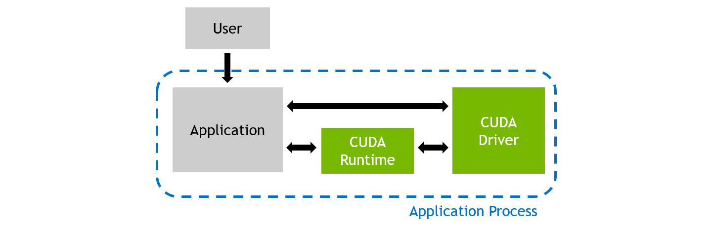
Regular Application Execution
When profiling an application with NVIDIA Nsight Compute, the behavior is different. The user launches the NVIDIA Nsight Compute frontend (either the UI or the CLI) on the host system, which in turn starts the actual application as a new process on the target system. While host and target are often the same machine, the target can also be a remote system with a potentially different operating system.
The tool inserts its measurement libraries into the application process, which allow the profiler to intercept communication with the CUDA user-mode driver. In addition, when a kernel launch is detected, the libraries can collect the requested performance metrics from the GPU. The results are then transferred back to the frontend.
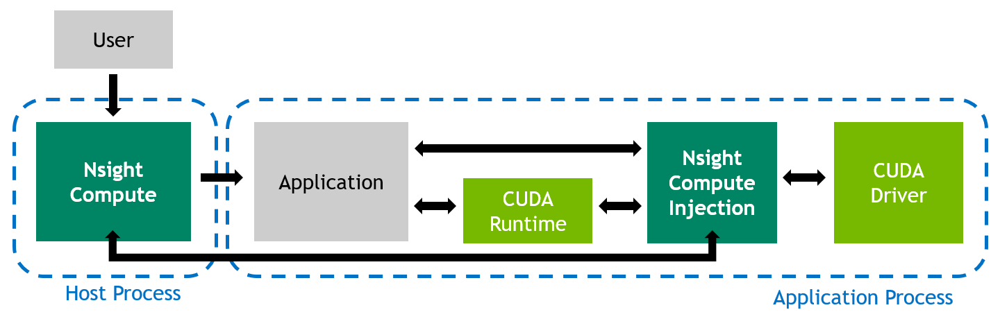
Profiled Application Execution
2.2. Metric Collection
Collection of performance metrics is the key feature of NVIDIA Nsight Compute. Since there is a huge list of metrics available, it is often easier to use some of the tool’s pre-defined sets or sections to collect a commonly used subset. Users are free to adjust which metrics are collected for which kernels as needed, but it is important to keep in mind the Overhead associated with data collection.
2.2.1. Sets and Sections
NVIDIA Nsight Compute uses Section Sets (short sets) to decide, on a very high level, the number of metrics to be collected. Each set includes one or more Sections, with each section specifying several logically associated metrics. For example, one section might include only high-level SM and memory utilization metrics, while another could include metrics associated with the memory units, or the HW scheduler.
The number and type of metrics specified by a section has significant impact on the overhead during profiling. To allow you to quickly choose between a fast, less detailed profile and a slower, more comprehensive analysis, you can select the respective section set. See Overhead for more information on profiling overhead.
By default, a relatively small number of metrics is collected.
Those mostly include high-level utilization information as well as static launch and occupancy data.
The latter two are regularly available without replaying the kernel launch.
The basic set is collected when no --set, --section and no --metrics options are passed on the command line.
The full set of sections can be collected with --set full.
Use --list-sets to see the list of currently available sets.
Use --list-sections to see the list of currently available sections.
The default search directory and the location of pre-defined section files are also called sections/.
All related command line options can be found in the NVIDIA Nsight Compute CLI documentation.
A file named .ncu-ignore may be placed in any directory to have its contents ignored when the tool looks for section (and rule) files.
When adding section directories recursively, even if the file is present, sub-directories are still searched.
2.2.2. Sections and Rules
Identifier and Filename |
Description |
|---|---|
ComputeWorkloadAnalysis (Compute Workload Analysis) |
Detailed analysis of the compute resources of the streaming multiprocessors (SM), including the achieved instructions per clock (IPC) and the utilization of each available pipeline. Pipelines with very high utilization might limit the overall performance. |
InstructionStats (Instruction Statistics) |
Statistics of the executed low-level assembly instructions (SASS). The instruction mix provides insight into the types and frequency of the executed instructions. A narrow mix of instruction types implies a dependency on few instruction pipelines, while others remain unused. Using multiple pipelines allows hiding latencies and enables parallel execution. |
LaunchStats (Launch Statistics) |
Summary of the configuration used to launch the kernel. The launch configuration defines the size of the kernel grid, the division of the grid into blocks, and the GPU resources needed to execute the kernel. Choosing an efficient launch configuration maximizes device utilization. |
MemoryWorkloadAnalysis (Memory Workload Analysis) |
Detailed analysis of the memory resources of the GPU. Memory can become a limiting factor for the overall kernel performance when fully utilizing the involved hardware units (Mem Busy), exhausting the available communication bandwidth between those units (Max Bandwidth), or by reaching the maximum throughput of issuing memory instructions (Mem Pipes Busy). Depending on the limiting factor, the memory chart and tables allow to identify the exact bottleneck in the memory system. |
NUMA Affinity (NumaAffinity) |
Non-uniform memory access (NUMA) affinities based on compute and memory distances for all GPUs. |
Nvlink (Nvlink) |
High-level summary of NVLink utilization. It shows the total received and transmitted (sent) memory, as well as the overall link peak utilization. |
Nvlink_Tables (Nvlink_Tables) |
Detailed tables with properties for each NVLink. |
Nvlink_Topology (Nvlink_Topology) |
NVLink Topology diagram shows logical NVLink connections with transmit/receive throughput. |
Occupancy (Occupancy) |
Occupancy is the ratio of the number of active warps per multiprocessor to the maximum number of possible active warps. Another way to view occupancy is the percentage of the hardware’s ability to process warps that is actively in use. Higher occupancy does not always result in higher performance, however, low occupancy always reduces the ability to hide latencies, resulting in overall performance degradation. Large discrepancies between the theoretical and the achieved occupancy during execution typically indicates highly imbalanced workloads. |
PM Sampling (PmSampling) |
Timeline view of metrics sampled periodically over the workload duration. Data is collected across multiple passes. Use this section to understand how workload behavior changes over its runtime. |
PM Sampling: Warp States (PmSampling_WarpStates) |
Warp states sampled periodically over the workload duration. Metrics in different groups come from different passes. |
SchedulerStats (Scheduler Statistics) |
Summary of the activity of the schedulers issuing instructions. Each scheduler maintains a pool of warps that it can issue instructions for. The upper bound of warps in the pool (Theoretical Warps) is limited by the launch configuration. On every cycle each scheduler checks the state of the allocated warps in the pool (Active Warps). Active warps that are not stalled (Eligible Warps) are ready to issue their next instruction. From the set of eligible warps, the scheduler selects a single warp from which to issue one or more instructions (Issued Warp). On cycles with no eligible warps, the issue slot is skipped and no instruction is issued. Having many skipped issue slots indicates poor latency hiding. |
SourceCounters (Source Counters) |
Source metrics, including branch efficiency and sampled warp stall reasons. Warp Stall Sampling metrics are periodically sampled over the kernel runtime. They indicate when warps were stalled and couldn’t be scheduled. See the documentation for a description of all stall reasons. Only focus on stalls if the schedulers fail to issue every cycle. |
SpeedOfLight (GPU Speed Of Light Throughput) |
High-level overview of the throughput for compute and memory resources of the GPU. For each unit, the throughput reports the achieved percentage of utilization with respect to the theoretical maximum. Breakdowns show the throughput for each individual sub-metric of Compute and Memory to clearly identify the highest contributor. |
WarpStateStats (Warp State Statistics) |
Analysis of the states in which all warps spent cycles during the kernel execution. The warp states describe a warp’s readiness or inability to issue its next instruction. The warp cycles per instruction define the latency between two consecutive instructions. The higher the value, the more warp parallelism is required to hide this latency. For each warp state, the chart shows the average number of cycles spent in that state per issued instruction. Stalls are not always impacting the overall performance nor are they completely avoidable. Only focus on stall reasons if the schedulers fail to issue every cycle. |
2.2.3. Replay
Depending on which metrics are to be collected, kernels might need to be replayed one or more times, since not all metrics can be collected in a single pass. For example, the number of metrics originating from hardware (HW) performance counters that the GPU can collect at the same time is limited. In addition, patch-based software (SW) performance counters can have a high impact on kernel runtime and would skew results for HW counters.
Kernel Replay
In Kernel Replay, all metrics requested for a specific kernel instance in NVIDIA Nsight Compute are grouped into one or more passes. For the first pass, all GPU memory that can be accessed by the kernel is saved. After the first pass, the subset of memory that is written by the kernel is determined. Before each pass (except the first one), this subset is restored in its original location to have the kernel access the same memory contents in each replay pass.
NVIDIA Nsight Compute attempts to use the fastest available storage location for this save-and-restore strategy. For example, if data is allocated in device memory, and there is still enough device memory available, it is stored there directly. If it runs out of device memory, the data is transferred to the CPU host memory. Likewise, if an allocation originates from CPU host memory, the tool first attempts to save it into the same memory location, if possible.
As explained in Overhead, the time needed for this increases the more memory is accessed, especially written, by a kernel. If NVIDIA Nsight Compute determines that only a single replay pass is necessary to collect the requested metrics, no save-and-restore is performed at all to reduce overhead.
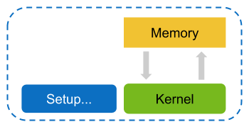
Regular Application Execution
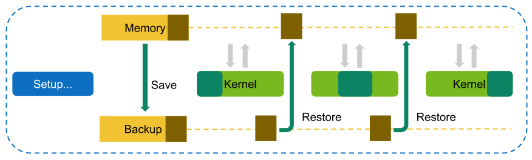
Execution with Kernel Replay. All memory is saved, and memory written by the kernel is restored in-between replay passes.
Application Replay
In Application Replay, all metrics requested for a specific kernel launch in NVIDIA Nsight Compute are grouped into one or more passes. In contrast to Kernel Replay, the complete application is run multiple times, so that in each run one of those passes can be collected per kernel.
For correctly identifying and combining performance counters collected from multiple application replay passes of a single kernel launch into one result, the application needs to be deterministic with respect to its kernel activities and their assignment to GPUs, contexts, streams, and potentially NVTX ranges. Normally, this also implies that the application needs to be deterministic with respect to its overall execution.
Application replay has the benefit that memory accessed by the kernel does not need to be saved and restored via the tool, as each kernel launch executes only once during the lifetime of the application process. Besides avoiding memory save-and-restore overhead, application replay also allows to disable Cache Control. This is especially useful if other GPU activities preceding a specific kernel launch are used by the application to set caches to some expected state.
In addition, application replay can support profiling kernels that have interdependencies to the host during execution. With kernel replay, this class of kernels typically hangs when being profiled, because the necessary responses from the host are missing in all but the first pass. In contrast, application replay ensures the correct behavior of the program execution in each pass.
In contrast to kernel replay, multiple passes collected via application replay imply that all host-side activities of the application are duplicated, too. If the application requires significant time for e.g. setup or file-system access, the overhead will increase accordingly.
Regular Application Execution
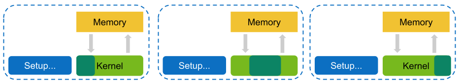
Execution with Application Replay. No memory is saved or restored, but the cost of running the application itself is duplicated.
Across application replay passes, NVIDIA Nsight Compute matches metric data for the individual, selected kernel launches. The matching strategy can be selected using the --app-replay-match option. For matching, only kernels within the same process and running on the same device are considered. By default, the grid strategy is used, which matches launches according to their kernel name and grid size. When multiple launches have the same attributes (e.g. name and grid size), they are matched in execution order.
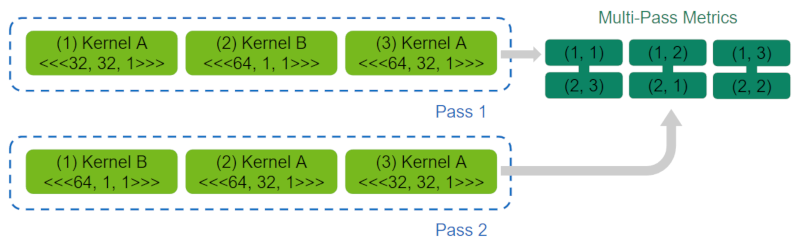
Kernel matching during application replay using the grid strategy.
Range Replay
In Range Replay, all requested metrics in NVIDIA Nsight Compute are grouped into one or more passes. In contrast to Kernel Replay and Application Replay, Range Replay captures and replays complete ranges of CUDA API calls and kernel launches within the profiled application. Metrics are then not associated with individual kernels but with the entire range. This allows the tool to execute kernels without serialization and thereby supports profiling kernels that should be run concurrently for correctness or performance reasons.
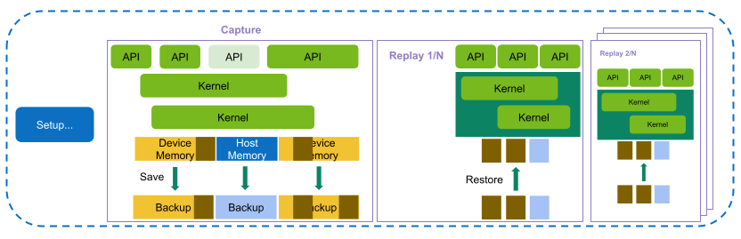
Execution with Range Replay. An entire range of API calls and kernel launches is captured and replayed. Host and device memory is saved and restored as necessary.
Defining Ranges
Range replay requires you to specify the range for profiling in the application. A range is defined by a start and an end marker and includes all CUDA API calls and kernels launched between these markers from any CPU thread. The application is responsible for inserting appropriate synchronization between threads to ensure that the anticipated set of API calls is captured. Range markers can be set using one of the following options:
Profiler Start/Stop API
Set the start marker using
cu(da)ProfilerStartand the end marker usingcu(da)ProfilerStop. Note: The CUDA driver API variants of this API require to includecudaProfiler.h. The CUDA runtime variants require to includecuda_profiler_api.h.This is the default for NVIDIA Nsight Compute.
NVTX Ranges
Define the range using an NVTX Include expression. The range capture starts with the first CUDA API call and ends at the last API call for which the expression is matched, respectively. If multiple expressions are specified, a range is defined as soon as any of them matches. Hence, multiple expressions can be used to conveniently capture and profile multiple ranges for the same application execution.
The application must have been instrumented with the NVTX API for any expressions to match.
This mode is enabled by passing
--nvtx --nvtx-include <expression> [--nvtx-include <expression>]to the NVIDIA Nsight Compute CLI.
Ranges must fulfill several requirements:
It must be possible to synchronize all active CUDA contexts at the start of the range.
Ranges must not include unsupported CUDA API calls. See Supported APIs for the list of currently supported APIs.
In addition, there are several recommendations that ranges should comply with to guarantee a correct capture and replay:
Set ranges as narrow as possible for capturing a specific set of CUDA launches. The more API calls are included, the higher the potentially created overhead from capturing and replaying these API calls.
Avoid freeing host allocations written by device memory during the range. This includes both heap as well as stack allocations. NVIDIA Nsight Compute does not intercept creation or destruction of generic host (CPU)-based allocations. However, to guarantee correct program execution after any replay of the range, the tool attempts to restore host allocations that were written from device memory during the capture. If these host addresses are invalid or re-assigned, the program behavior is undefined and potentially unstable. In cases where avoiding freeing such allocations is not possible, you should limit profiling to one range using
--launch-count 1, set the disable-host-restore range replay option and optionally use--kill yesto terminate the process after this range.Defining narrow ranges at local scope helps with avoiding destruction of stack allocations during the range, too.
When defining the range markers using
cu(da)ProfilerStart/Stop, prefer the CUDA driver API callscuProfilerStart/Stop. Internally, NVIDIA Nsight Compute only intercepts the CUDA driver API variants and the CUDA runtime API may not trigger these if no CUDA context is active on the calling thread.
Supported APIs
Range replay supports a subset of the CUDA API for capture and replay. This page lists the supported functions as well as any further, API-specific limitations that may apply. If an unsupported API call is detected in the captured range, an error is reported and the range cannot be profiled. The groups listed below match the ones found in the CUDA Driver API documentation.
Generally, range replay only captures and replay CUDA Driver API calls. CUDA Runtime APIs calls can be captured when they generate only supported CUDA Driver API calls internally. Deprecated APIs are not supported.
Error Handling
All supported.
Initialization
Not supported.
Version Management
All supported.
Device Management
All supported, except:
cuDeviceSetMemPool
Primary Context Management
cuDevicePrimaryCtxGetState
Context Management
All supported, except:
cuCtxSetCacheConfig
cuCtxSetSharedMemConfig
Module Management
cuModuleGetFunction
cuModuleGetGlobal
cuModuleGetSurfRef
cuModuleGetTexRef
cuModuleLoad
cuModuleLoadData
cuModuleLoadDataEx
cuModuleLoadFatBinary
cuModuleUnload
Library Management
All supported, except:
cuKernelSetAttribute
cuKernelSetCacheConfig
Memory Management
cuArray*
cuDeviceGetByPCIBusId
cuDeviceGetPCIBusId
cuMemAlloc
cuMemAllocHost
cuMemAllocPitch
cuMemBatchDecompressAsync
cuMemcpy*
cuMemFree
cuMemFreeHost
cuMemGetAddressRange
cuMemGetInfo
cuMemHostAlloc
cuMemHostGetDevicePointer
cuMemHostGetFlags
cuMemHostRegister
cuMemHostUnregister
cuMemset*
cuMipmapped*
Virtual Memory Management
Not supported.
Stream Ordered Memory Allocator
Not supported.
Unified Addressing
Not supported.
Stream Management
cuStreamCreate*
cuStreamDestroy
cuStreamGet*
cuStreamQuery
cuStreamSetAttribute
cuStreamSynchronize
cuStreamWaitEvent
Event Management
All supported.
External Resource interoperability
Not supported.
Stream Memory Operations
Not supported.
Execution Control
cuFuncGetAttribute
cuFuncGetModule
cuFuncSetAttribute
cuFuncSetCacheConfig
cuLaunchCooperativeKernel
cuLaunchHostFunc
cuLaunchKernel
Graph Management
Not supported.
Occupancy
All supported.
Texture/Surface Reference Management
Not supported.
Texture Object Management
All supported.
Surface Object Management
All supported.
Peer Context Memory Access
Not supported.
Graphics Interoperability
Not supported.
Driver Entry Point Access
All supported.
Surface Object Management
All supported.
OpenGL Interoperability
Not supported.
VDPAU Interoperability
Not supported.
EGL Interoperability
Not supported.
Green Contexts
cuCtxFromGreenCtx
cuGreenCtxCreate
cuGreenCtxDestroy
cuGreenCtxRecordEvent
cuGreenCtxStreamCreate
cuGreenCtxWaitEvent
cuStreamGetGreenCtx
Application Range Replay
In Application Range Replay, all requested metrics in NVIDIA Nsight Compute are grouped into one or more passes. Similar to Range Replay, metrics are not associated with individual kernels but with the entire selected range. This allows the tool to execute workloads (kernels, CUDA graphs, …) without serialization and thereby supports profiling workloads that must be run concurrently for correctness or performance reasons.
In contrast to Range Replay, the range is not explicitly captured and executed directly for each pass, but instead the entire application is re-run multiple times, with one pass collected for each range in every application execution. This has the benefit that no application state must be observed and captured for each range and API calls within the range do not need to be supported explicitly, as correct execution of the range is handled by the application itself.
Defining ranges to profile is identical to Range Replay. The CUDA context for which the range should be profiled must be current to the thread defining the start of the range and must be active for the entire range.
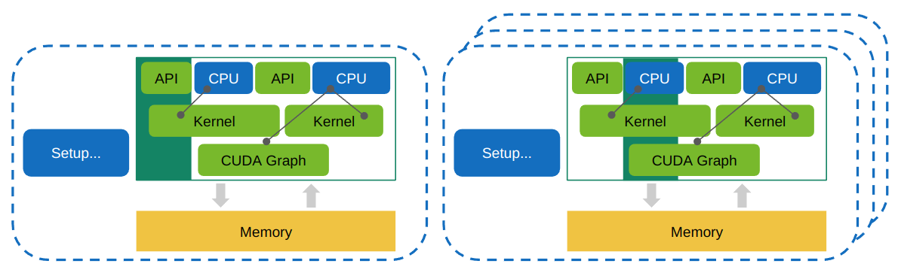
Execution with Application Range Replay. A range of workloads is replayed by re-running the entire application without modifying interactions or saving and restoring memory.
Graph Profiling
In multiple replay modes, NVIDIA Nsight Compute can profile CUDA graphs as single workload entities, rather than profile individual kernel nodes. The behavior can be toggled in the respective command line or UI options.
The primary use cases for enabling this mode are:
Profile graphs that include mandatory concurrent kernel nodes.
Profile graphs that include device-sided graph launches.
Profile graph behavior more accurately across multiple kernel node launches, as caches are not purged in between nodes.
Note that when graph profiling is enabled, certain metrics such as instruction-level source metrics are not available. This then also applies to kernels profiled outside of graphs.
2.2.4. Compatibility
The set of available replay modes and metrics depends on the type of GPU workload to profile.
Workload Type |
Replay Mode |
Metric Groups |
|||||||
Kernel |
Application |
Range |
Application-Range |
Hardware Counters / SMSP |
Unit-Level Source |
Instruction-Level Source 3 |
Launch |
Warp/PM Sampling |
|
Kernel |
Yes |
Yes |
Yes 2 |
Yes 2 |
Yes |
Yes |
Yes |
Yes |
Yes |
Range |
No |
No |
Yes |
Yes |
Yes |
No |
Yes |
Some |
Yes |
Cmdlist |
Yes |
No |
No |
No |
Yes |
Yes |
Yes |
Some |
Yes |
Graph 1 |
Yes |
No |
No |
No |
Yes |
No |
No |
Some |
Yes |
Footnotes
- 1
Limitations also apply to kernels profiled outside of graphs.
- 2(1,2)
Workload type is supported as part of the profiled range, but not separated in the result. Metric support matches that of Range workloads.
- 3
Instruction-level source metrics do not require profiling permissions on the target device when collected through the command line interface.
2.2.5. Profile Series
The performance of a kernel is highly dependent on the used launch parameters. Small changes to the launch parameters can have a significant effect on the runtime behavior of the kernel. However, identifying the best parameter set for a kernel by manually testing a lot of combinations can be a tedious process.
To make this workflow faster and more convenient, Profile Series provide the ability to automatically profile a single kernel multiple times with changing parameters. The parameters to be modified and values to be tested can be independently enabled and configured. For each combination of selected parameter values a unique profile result is collected. And the modified parameter values are tracked in the description of the results of a series. By comparing the results of a profile series, the kernel’s behavior on the changing parameters can be seen and the most optimal parameter set can be identified quickly.
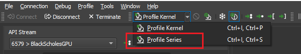
Profile Series action.
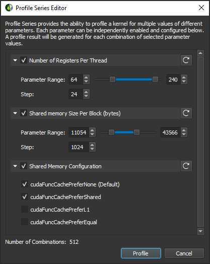
Profile Series dialog.
2.2.6. Overhead
As with most measurements, collecting performance data using NVIDIA Nsight Compute CLI incurs some runtime overhead on the application. The overhead does depend on a number of different factors:
Number and type of collected metrics
Depending on the selected metric, data is collected either through a hardware performance monitor on the GPU, through software patching of the kernel instructions or via a launch or device attribute. The overhead between these mechanisms varies greatly, with launch and device attributes being “statically” available and requiring no kernel runtime overhead.
Furthermore, only a limited number of metrics can be collected in a single pass of the kernel execution. If more metrics are requested, the kernel launch is replayed multiple times, with its accessible memory being saved and restored between subsequent passes to guarantee deterministic execution. Therefore, collecting more metrics can significantly increase overhead by requiring more replay passes and increasing the total amount of memory that needs to be restored during replay.
The collected section set
Since each set specifies a group of sections to be collected, choosing a less comprehensive set can reduce profiling overhead. See the
--setcommand in the NVIDIA Nsight Compute CLI documentation.Number of collected sections
Since each section specifies a number of metrics to be collected, selecting fewer sections can reduce profiling overhead. See the
--sectioncommand in the NVIDIA Nsight Compute CLI documentation.Number of profiled kernels
By default, all selected metrics are collected for all launched kernels. To reduce the impact on the application, you can try to limit performance data collection to as few kernel functions and instances as makes sense for your analysis. See the filtering commands in the NVIDIA Nsight Compute CLI documentation.
There is a relatively high one-time overhead for the first profiled kernel in each context to generate the metric configuration. This overhead does not occur for subsequent kernels in the same context, if the list of collected metrics remains unchanged.
GPU Architecture
For some metrics, the overhead can vary depending on the exact chip they are collected on, e.g. due to varying number of units on the chip. Similarly, the overhead for resetting the L2 cache in-between kernel replay passes depends on the size of that cache.
2.3. Metrics Guide
2.3.1. Hardware Model
Compute Model
All NVIDIA GPUs are designed to support a general purpose heterogeneous parallel programming model, commonly known as Compute. This model decouples the GPU from the traditional graphics pipeline and exposes it as a general purpose parallel multi-processor. A heterogeneous computing model implies the existence of a host and a device, which in this case are the CPU and GPU, respectively. At a high level view, the host (CPU) manages resources between itself and the device and will send work off to the device to be executed in parallel.
Central to the compute model is the Grid, Block, Thread hierarchy, which defines how compute work is organized on the GPU. The hierarchy from top to bottom is as follows:
A Grid is a 1D, 2D or 3D array of thread blocks.
A Block is a 1D, 2D or 3D array of threads, also known as a Cooperative Thread Array (CTA).
A Thread is a single thread which runs on one of the GPU’s SM units.
The purpose of the Grid, Block, Thread hierarchy is to expose a notion of locality amongst a group of threads, i.e. a Cooperative Thread Array (CTA). In CUDA, CTAs are referred to as Thread Blocks. The architecture can exploit this locality by providing fast shared memory and barriers between the threads within a single CTA. When a Grid is launched, the architecture guarantees that all threads within a CTA will run concurrently on the same SM. Information on the grids and blocks can be found in the Launch Statistics section.
The number of CTAs that fit on each SM depends on the physical resources required by the CTA. These resource limiters include the number of threads and registers, shared memory utilization, and hardware barriers. The number CTAs per SM is referred to as the CTA occupancy, and these physical resources limit this occupancy. Details on the kernel’s occupancy are collected by the Occupancy section.
Each CTA can be scheduled on any of the available SMs, where there is no guarantee in the order of execution. As such, CTAs must be entirely independent, which means it is not possible for one CTA to wait on the result of another CTA. As CTAs are independent, the host (CPU) can launch a large Grid that will not fit on the hardware all at once, however any GPU will still be able to run it and produce the correct results.
CTAs are further divided into groups of 32 threads called Warps. If the number of threads in a CTA is not dividable by 32, the last warp will contain the remaining number of threads.
The total number of CTAs that can run concurrently on a given GPU is referred to as Wave. Consequently, the size of a Wave scales with the number of available SMs of a GPU, but also with the occupancy of the kernel.
Streaming Multiprocessor
The Streaming Multiprocessor (SM) is the core processing unit in the GPU. The SM is optimized for a wide diversity of workloads, including general-purpose computations, deep learning, ray tracing, as well as lighting and shading. The SM is designed to simultaneously execute multiple CTAs. CTAs can be from different grid launches.
The SM implements an execution model called Single Instruction Multiple Threads (SIMT), which allows individual threads to have unique control flow while still executing as part of a warp. The Turing SM inherits the Volta SM’s independent thread scheduling model. The SM maintains execution state per thread, including a program counter (PC) and call stack. The independent thread scheduling allows the GPU to yield execution of any thread, either to make better use of execution resources or to allow a thread to wait for data produced by another thread possibly in the same warp. Collecting the Source Counters section allows you to inspect instruction execution and predication details on the Source Page, along with Sampling information.
Each SM is partitioned into four processing blocks, called SM sub partitions. The SM sub partitions are the primary processing elements on the SM. Each sub partition contains the following units:
Warp Scheduler
Register File
Execution Units/Pipelines/Cores
Integer Execution units
Floating Point Execution units
Memory Load/Store units
Special Function unit
Tensor Cores
Shared within an SM across the four SM partitions are:
Unified L1 Data Cache / Shared Memory
Texture units
RT Cores, if available
A warp is allocated to a sub partition and resides on the sub partition from launch to completion. A warp is referred to as active or resident when it is mapped to a sub partition. A sub partition manages a fixed size pool of warps. On Volta architectures, the size of the pool is 16 warps. On Turing architectures the size of the pool is 8 warps. Active warps can be in eligible state if the warp is ready to issue an instruction. This requires the warp to have a decoded instruction, all input dependencies resolved, and for the function unit to be available. Statistics on active, eligible and issuing warps can be collected with the Scheduler Statistics section.
A warp is stalled when the warp is waiting on
an instruction fetch,
a memory dependency (result of memory instruction),
an execution dependency (result of previous instruction), or
a synchronization barrier.
See Warp Scheduler States for the list of stall reasons that can be profiled and the Warp State Statistics section for a summary of warp states found in the kernel execution.
The most important resource under the compiler’s control is the number of registers used by a kernel. Each sub partition has a set of 32-bit registers, which are allocated by the HW in fixed-size chunks. The Launch Statistics section shows the kernel’s register usage.
Compute Preemption
Compute preemption avoids long running kernels from monopolizing the GPU, at the risk of context switch overhead. The execution context (registers, shared memory, etc.) is saved at preemption and restored later. Context switches happen at instruction-level granularity. The exclusive-process compute mode may be used on supported systems to avoid context switching.
Memory
Global memory is a 49-bit virtual address space that is mapped to physical memory on the device, pinned system memory, or peer memory. Global memory is visible to all threads in the GPU. Global memory is accessed through the SM L1 and GPU L2.
Local memory is private storage for an executing thread and is not visible outside of that thread. It is intended for thread-local data like thread stacks and register spills. Local memory addresses are translated to global virtual addresses by the AGU unit. Local memory has the same latency as global memory. One difference between global and local memory is that local memory is arranged such that consecutive 32-bit words are accessed by consecutive thread IDs. Accesses are therefore fully coalesced as long as all threads in a warp access the same relative address (e.g., same index in an array variable, same member in a structure variable, etc.).
Shared memory is located on chip, so it has much higher bandwidth and much lower latency than either local or global memory. Shared memory can be shared across a compute CTA. Compute CTAs attempting to share data across threads via shared memory must use synchronization operations (such as __syncthreads()) between stores and loads to ensure data written by any one thread is visible to other threads in the CTA. Similarly, threads that need to share data via global memory must use a more heavyweight global memory barrier.
Shared memory has 32 banks that are organized such that successive 32-bit words map to successive banks that can be accessed simultaneously. Any 32-bit memory read or write request made of 32 addresses that fall in 32 distinct memory banks can therefore be serviced simultaneously, yielding an overall bandwidth that is 32 times as high as the bandwidth of a single request. However, if two addresses of a memory request fall in the same memory bank, there is a bank conflict and the access has to be serialized.
A shared memory request for a warp does not generate a bank conflict between two threads that access any address within the same 32-bit word (even though the two addresses fall in the same bank). When multiple threads make the same read access, one thread receives the data and then broadcasts it to the other threads. When multiple threads write to the same location, only one thread succeeds in the write; which thread that succeeds is undefined.
Detailed memory metrics are collected by the Memory Workload Analysis section.
Caches
All GPU units communicate to main memory through the Level 2 cache, also known as the L2. The L2 cache sits between on-chip memory clients and the framebuffer. L2 works in physical-address space. In addition to providing caching functionality, L2 also includes hardware to perform compression and global atomics.
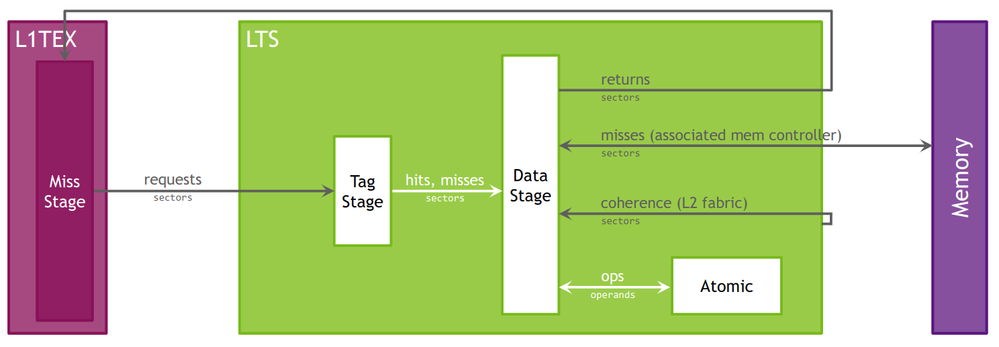
Model of the L2 cache.
The Level 1 Data Cache, or L1, plays a key role in handling global, local, shared, texture, and surface memory reads and writes, as well as reduction and atomic operations. On Volta and Turing architectures there are , there are two L1 caches per TPC, one for each SM. For more information on how L1 fits into the texturing pipeline, see the TEX unit description. Also note that while this section often uses the name “L1”, it should be understood that the L1 data cache, shared data, and the Texture data cache are one and the same.
L1 receives requests from two units: the SM and TEX. L1 receives global and local memory requests from the SM and receives texture and surface requests from TEX. These operations access memory in the global memory space, which L1 sends through a secondary cache, the L2.
Cache hit and miss rates as well as data transfers are reported in the Memory Workload Analysis section.
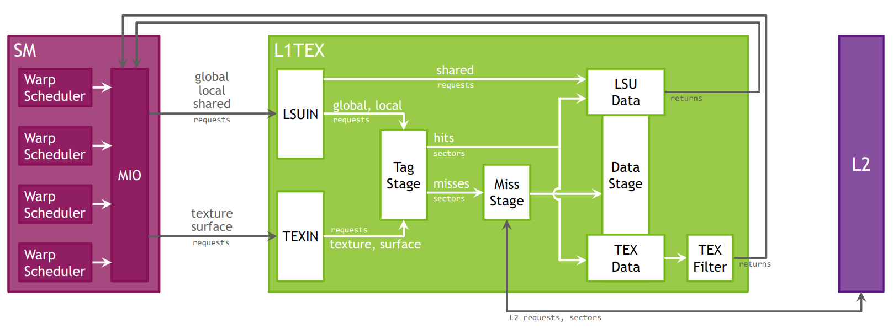
Model of Load/Store and Texture pipelines for the L1TEX cache.
Texture/Surface
The TEX unit performs texture fetching and filtering. Beyond plain texture memory access, TEX is responsible for the addressing, LOD, wrap, filter, and format conversion operations necessary to convert a texture read request into a result.
TEX receives two general categories of requests from the SM via its input interface: texture requests and surface load/store operations. Texture and surface memory space resides in device memory and are cached in L1. Texture and surface memory are allocated as block-linear surfaces (e.g. 2D, 2D Array, 3D). Such surfaces provide a cache-friendly layout of data such that neighboring points on a 2D surface are also located close to each other in memory, which improves access locality. Surface accesses are bounds-checked by the TEX unit prior to accessing memory, which can be used for implementing different texture wrapping modes.
The L1 cache is optimized for 2D spatial locality, so threads of the same warp that read texture or surface addresses that are close together in 2D space will achieve optimal performance. The L1 cache is also designed for streaming fetches with constant latency; a cache hit reduces DRAM bandwidth demand but not fetch latency. Reading device memory through texture or surface memory presents some benefits that can make it an advantageous alternative to reading memory from global or constant memory.
Information on texture and surface memory can be found in the Memory Workload Analysis section.
2.3.2. Metrics Structure
Metrics Overview
NVIDIA Nsight Compute uses an advanced metrics calculation system, designed to help you determine what happened (counters and metrics), and how close the program reached to peak GPU performance (throughputs as a percentage). Every counter has associated peak rates in the database, to allow computing its throughput as a percentage.
Throughput metrics return the maximum percentage value of their constituent counters. These constituents have been carefully selected to represent the sections of the GPU pipeline that govern peak performance. While all counters can be converted to a %-of-peak, not all counters are suitable for peak-performance analysis; examples of unsuitable counters include qualified subsets of activity, and workload residency counters. Using throughput metrics ensures meaningful and actionable analysis.
Two types of peak rates are available for every counter: burst and sustained. Burst rate is the maximum rate reportable in a single clock cycle. Sustained rate is the maximum rate achievable over an infinitely long measurement period, for “typical” operations. For many counters, burst equals sustained. Since the burst rate cannot be exceeded, percentages of burst rate will always be less than 100%. Percentages of sustained rate can occasionally exceed 100% in edge cases.
Metrics Entities
While in NVIDIA Nsight Compute, all performance counters are named metrics, they can be split further into groups with specific properties. For metrics collected via the PerfWorks measurement library, the following entities exist:
Counters may be either a raw counter from the GPU, or a calculated counter value. Every counter has four sub-metrics under it, which are also called roll-ups:
|
The sum of counter values across all unit instances. |
|
The average counter value across all unit instances. |
|
The minimum counter value across all unit instances. |
|
The maximum counter value across all unit instances. |
Counter roll-ups have the following calculated quantities as built-in sub-metrics:
|
the peak sustained rate |
|
the peak sustained rate during unit active cycles |
|
the peak sustained rate during unit active cycles, per second * |
|
the peak sustained rate during unit elapsed cycles |
|
the peak sustained rate during unit elapsed cycles, per second * |
|
the number of operations per second |
|
the number of operations per unit active cycle |
|
the number of operations per unit elapsed cycle |
|
% of peak sustained rate achieved during unit active cycles |
|
% of peak sustained rate achieved during unit elapsed cycles |
* sub-metrics added in NVIDIA Nsight Compute 2022.2.0.
Example: ncu --query-metrics-mode suffix --metrics sm__inst_executed --chip ga100
Ratios have three sub-metrics:
|
The value expressed as a percentage. |
|
The value expressed as a ratio. |
|
The ratio’s maximum value. |
Example: ncu --query-metrics-mode suffix --metrics smsp__average_warp_latency --chip ga100
Throughputs indicate how close a portion of the GPU reached to peak rate. Every throughput has the following sub-metrics:
|
% of peak sustained rate achieved during unit active cycles |
|
% of peak sustained rate achieved during unit elapsed cycles |
Example: ncu --query-metrics-mode suffix --metrics sm__throughput --chip ga100
Throughputs have a breakdown of underlying metrics from which the throughput value is computed. You can collect breakdown:<throughput-metric> to collect a throughput’s breakdown metrics.
Deprecated counter sub-metrics: The following sub-metrics were removed, due to not being useful for performance optimization:
|
the peak burst rate |
|
% of peak burst rate achieved during unit active cycles |
|
% of peak burst rate achieved during unit elapsed cycles |
|
% of peak burst rate achieved over a user-specified “range” |
|
% of peak burst rate achieved over a user-specified “frame” |
|
% of peak sustained rate achieved over a user-specified “range” time |
|
% of peak sustained rate achieved over a user-specified “frame” time |
|
the number of operations per user-specified “range” cycle |
|
the number of operations per user-specified “frame” cycle |
|
the peak sustained rate over a user-specified “range” |
|
the peak sustained rate over a user-specified “range”, per second * |
|
the peak sustained rate over a user-specified “frame” |
|
the peak sustained rate over a user-specified “frame”, per second * |
Deprecated throughput sub-metrics: The following sub-metrics were removed, due to not being useful for performance optimization:
|
% of peak burst rate achieved during unit active cycles |
|
% of peak burst rate achieved during unit elapsed cycles |
|
% of peak burst rate achieved over a user-specified “range” time |
|
% of peak burst rate achieved over a user-specified “frame” time |
|
% of peak sustained rate achieved over a user-specified “range” |
|
% of peak sustained rate achieved over a user-specified “frame” |
In addition to PerfWorks metrics, NVIDIA Nsight Compute uses several other measurement providers that each generate their own metrics. These are explained in the Metrics Reference.
Metrics Examples
## non-metric names -- *not* directly evaluable
sm__inst_executed # counter
smsp__average_warp_latency # ratio
sm__throughput # throughput
## a counter's four first-level sub-metrics -- all evaluable
sm__inst_executed.sum
sm__inst_executed.avg
sm__inst_executed.min
sm__inst_executed.max
## all names below are metrics -- all evaluable
l1tex__data_bank_conflicts_pipe_lsu.sum
l1tex__data_bank_conflicts_pipe_lsu.sum.peak_sustained
l1tex__data_bank_conflicts_pipe_lsu.sum.peak_sustained_active
l1tex__data_bank_conflicts_pipe_lsu.sum.peak_sustained_active.per_second
l1tex__data_bank_conflicts_pipe_lsu.sum.peak_sustained_elapsed
l1tex__data_bank_conflicts_pipe_lsu.sum.peak_sustained_elapsed.per_second
l1tex__data_bank_conflicts_pipe_lsu.sum.per_cycle_active
l1tex__data_bank_conflicts_pipe_lsu.sum.per_cycle_elapsed
l1tex__data_bank_conflicts_pipe_lsu.sum.per_second
l1tex__data_bank_conflicts_pipe_lsu.sum.pct_of_peak_sustained_active
l1tex__data_bank_conflicts_pipe_lsu.sum.pct_of_peak_sustained_elapsed
...
Metrics Naming Conventions
Counters and metrics generally obey the naming scheme:
Unit-Level Counter :
unit__(subunit?)_(pipestage?)_quantity_(qualifiers?)Interface Counter :
unit__(subunit?)_(pipestage?)_(interface)_quantity_(qualifiers?)Unit Metric :
(counter_name).(rollup_metric)Sub-Metric :
(counter_name).(rollup_metric).(submetric)
where
unit: A logical or physical unit of the GPU
subunit: The subunit within the unit where the counter was measured. Sometimes this is a pipeline mode instead.
pipestage: The pipeline stage within the subunit where the counter was measured.
quantity: What is being measured. Generally matches the dimensional units.
qualifiers: Any additional predicates or filters applied to the counter. Often, an unqualified counter can be broken down into several qualified sub-components.
interface: Of the form
sender2receiver, wheresenderis the source-unit andreceiveris the destination-unit.rollup_metric: One of sum, avg, min, max.
submetric: refer to section Metrics Entities
Components are not always present. Most top-level counters have no qualifiers. Subunit and pipestage may be absent where irrelevant, or there may be many subunit specifiers for detailed counters.
Cycle Metrics
Counters using the term cycles in the name report the number of cycles in the unit’s clock domain. Unit-level cycle metrics include:
unit__cycles_elapsed: The number of cycles within a range. The cycles’ DimUnits are specific to the unit’s clock domain.unit__cycles_active: The number of cycles where the unit was processing data.unit__cycles_stalled: The number of cycles where the unit was unable to process new data because its output interface was blocked.unit__cycles_idle: The number of cycles where the unit was idle.
Interface-level cycle counters are often (not always) available in the following variations:
unit__(interface)_active: Cycles where data was transferred from source-unit to destination-unit.unit__(interface)_stalled: Cycles where the source-unit had data, but the destination-unit was unable to accept data.
Instanced Metrics
Metrics collected with NVIDIA Nsight Compute can have a single (aggregate) value, multiple instance values, or both. Instances allow the metric to have multiple sub-values, e.g. representing the value of a source metric at each instruction offset. If a metric has instance values, it often also has a correlation ID for each instance. Correlation IDs and values form a mapping that allows the tool to correlate the values within a context. For source metrics, that context is commonly the address ranges of the functions executed as part of the workload.
You can find which metrics have instance values in the Metrics Reference. In the UI, the Metric Details tool window can be used to conveniently view correlation IDs and instance values for each metric. Also, both the UI and the command line interface provide options to show instance values in addition to a metric aggregate where applicable.
2.3.3. Metrics Decoder
The following explains terms found in NVIDIA Nsight Compute metric names, as introduced in Metrics Structure.
Units
Units
ctcDedicated, high-bandwidth, memory coherent NVLink Chip-2-Chip (C2C) interconnect that can access Extended GPU Memory (EGM).
See https://developer.nvidia.com/blog/nvidia-grace-hopper-superchip-architecture-in-depth/ for more information.
dramDevice (main) memory, where the GPUs global and local memory resides.
fbpaThe FrameBuffer Partition is a memory controller which sits between the level 2 cache (LTC) and the DRAM. The number of FBPAs varies across GPUs.
feThe Frontend unit is responsible for the overall flow of workloads sent by the driver. FE also facilitates a number of synchronization operations.
gpcThe General Processing Cluster contains SM, Texture and L1 in the form of TPC(s). It is replicated several times across a chip.
gpuThe entire Graphics Processing Unit.
grGraphics Engine is responsible for all 2D and 3D graphics, compute work, and synchronous graphics copying work.
gxcThe GPC XBAR Compressor attempts to compress fully covered 128B writes coming from GPCs before sending them to the L2 cache. On read requests, the L2 cache returns compressed data. GXC decompresses and returns the requested uncompressed sectors.
idcThe InDexed Constant Cache is a subunit of the SM responsible for caching constants that are indexed with a register.
l1texThe Level 1 (L1)/Texture Cache is located within the GPC. It can be used as directed-mapped shared memory and/or store global, local and texture data in its cache portion. l1tex__t refers to its Tag stage. l1tex__m refers to its Miss stage. l1tex__d refers to its Data stage.
lrcThe L2 Request Coalescer (LRC) processes incoming requests for L2 and tries to coalesce read requests before forwarding them to the L2 cache. It also serves programmatic multicast requests from the SM and supports compression for writes.
ltcThe Level 2 cache.
ltcfabricThe LTC fabric is the communication fabric for the L2 cache partitions.
ltsA Level 2 (L2) Cache Slice is a sub-partition of the Level 2 cache. lts__t refers to its Tag stage. lts__m refers to its Miss stage. lts__d refers to its Data stage.
mccMemory controller channel of MSS. The Memory Subsystem (MSS) provides access to local DRAM, SysRAM, and provides a SyncPoint Interface for interprocessor signaling. MCC includes the row sorter/arbiter and DRAM controllers.
nvlrxNVLink Receiver.
nvltxNVLink Transmitter.
pmPerformance monitor.
smThe Streaming Multiprocessor handles execution of a kernel as groups of 32 threads, called warps. Warps are further grouped into cooperative thread arrays (CTA), called blocks in CUDA. All warps of a CTA execute on the same SM. CTAs share various resources across their threads, e.g. the shared memory.
smspEach SM is partitioned into four processing blocks, called SM sub partitions. The SM sub partitions are the primary processing elements on the SM. A sub partition manages a fixed size pool of warps.
sysLogical grouping of several units.
syslrcA reduced version of LRC for SysL2 that only serves programmatic multicast requests from the SM.
sysltsSysL2 is the level-2 cache for system and peer memory.
tpcThread Processing Clusters are units in the GPC. They contain one or more SM, Texture and L1 units, the Instruction Cache (ICC) and the Indexed Constant Cache (IDC).
vidlrcThe LRC for global (video) memory.
xcompThe Crossbar (XBAR) Compressor.
Subunits
Subunits
aperture_deviceMemory interface to local device memory (dram)
aperture_peerMemory interface to remote device memory
aperture_sysmemMemory interface to system memory
globalGlobal memory is a 49-bit virtual address space that is mapped to physical memory on the device, pinned system memory, or peer memory. Global memory is visible to all threads in the GPU. Global memory is accessed through the SM L1 and GPU L2.
ilcInline Compressor (ILC) is part of LRC. It compresses writes when possible before data is written to L2 and decompresses data when responding to read requests.
lgLocal/Global memory
localLocal memory is private storage for an executing thread and is not visible outside of that thread. It is intended for thread-local data like thread stacks and register spills. Local memory has the same latency as global memory.
lsuLoad/Store unit
lsuinLoad/Store input
mioMemory input/output
miocMemory input/output control
sharedShared memory is located on chip, so it has much higher bandwidth and much lower latency than either local or global memory. Shared memory can be shared across a compute CTA.
surfaceSurface memory
texinTEXIN
textureTexture memory
workidID for a unit of work in a grid.
xbarThe Crossbar (XBAR) is responsible for carrying packets from a given source unit to a specific destination unit.
Pipelines
Pipelines
aduAddress Divergence Unit. The ADU is responsible for address divergence handling for branches/jumps. It also provides support for constant loads and block-level barrier instructions.
aluArithmetic Logic Unit. The ALU is responsible for execution of most bit manipulation and logic instructions. It also executes integer instructions, excluding IMAD and IMUL. On NVIDIA Ampere architecture chips, the ALU pipeline performs fast FP32-to-FP16 conversion.
cbuConvergence Barrier Unit. The CBU is responsible for warp-level convergence, barrier, and branch instructions.
fmaFused Multiply Add/Accumulate. The FMA pipeline processes most FP32 arithmetic (FADD, FMUL, FMAD). It also performs integer multiplication operations (IMUL, IMAD), as well as integer dot products. On GA10x, FMA is a logical pipeline that indicates peak FP32 and FP16x2 performance. It is composed of the FMAHeavy and FMALite physical pipelines.
fmaheavyFused Multiply Add/Accumulate Heavy. FMAHeavy performs FP32 arithmetic (FADD, FMUL, FMAD), FP16 arithmetic (HADD2, HMUL2, HFMA2), integer multiplication operations (IMUL, IMAD), and integer dot products.
fmaliteFused Multiply Add/Accumulate Lite. FMALite performs FP32 arithmetic (FADD, FMUL, FMA) and FP16 arithmetic (HADD2, HMUL2, HFMA2).
fp16Half-precision floating-point. On Volta, Turing and NVIDIA GA100, the FP16 pipeline performs paired FP16 instructions (FP16x2). It also contains a fast FP32-to-FP16 and FP16-to-FP32 converter. Starting with GA10x chips, this functionality is part of the FMA pipeline.
fp64Double-precision floating-point. The implementation of FP64 varies greatly per chip.
lsuLoad Store Unit. The LSU pipeline issues load, store, atomic, and reduction instructions to the L1TEX unit for global, local, and shared memory. It also issues special register reads (S2R), shuffles, and CTA-level arrive/wait barrier instructions to the L1TEX unit.
tcTensor Core. The TC pipeline executes UTCBAR, UTCCP, UTC*MMA, UTCSHIFT and UTC*SWS instructions. It is different from the Tensor pipeline.
tensorThe Tensor pipeline executes various MMA instructions. It is different from the Tensor Core pipeline.
texTexture Unit. The SM texture pipeline forwards texture and surface instructions to the L1TEX unit’s TEXIN stage. On GPUs where FP64 or Tensor pipelines are decoupled, the texture pipeline forwards those types of instructions, too.
tmaTensor Memory Access Unit. Provides efficient data transfer mechanisms between global and shared memories with the ability to understand and traverse multidimensional data layouts.
tmemTensor Memory. The TMEM pipeline executes FENCE.VIEW.ASYNC.T, LDT(M) and STT(M) instructions. TMEM also refers to the dedicated tensor memory within the SM sub-partition (SMSP).
uniformUniform Data Path. This scalar unit executes instructions where all threads use the same input and generate the same output.
xuTranscendental and Data Type Conversion Unit. The XU pipeline is responsible for special functions such as sin, cos, and reciprocal square root. It is also responsible for int-to-float, and float-to-int type conversions.
Quantities
Quantities
instructionAn assembly (SASS) instruction. Each executed instruction may generate zero or more requests.
requestA command into a HW unit to perform some action, e.g. load data from some memory location. Each request accesses one or more sectors.
sectorAligned 32 byte-chunk of memory in a cache line or device memory. An L1 or L2 cache line is four sectors, i.e. 128 bytes. Sector accesses are classified as hits if the tag is present and the sector-data is present within the cache line. Tag-misses and tag-hit-data-misses are all classified as misses.
tagUnique key to a cache line. A request may look up multiple tags, if the thread addresses do not all fall within a single cache line-aligned region. The L1 and L2 both have 128 byte cache lines. Tag accesses may be classified as hits or misses.
wavefrontUnique “work package” generated at the end of the processing stage for requests. All work items of a wavefront are processed in parallel, while work items of different wavefronts are serialized and processed on different cycles. At least one wavefront is generated for each request.
A simplified model for the processing in L1TEX for Volta and newer architectures can be described as follows: When an SM executes a global or local memory instruction for a warp, a single request is sent to L1TEX. This request communicates the information for all participating threads of this warp (up to 32). For local and global memory, based on the access pattern and the participating threads, the request requires to access a number of cache lines, and sectors within these cache lines. The L1TEX unit has internally multiple processing stages operating in a pipeline.
A wavefront is the maximum unit that can pass through that pipeline stage per cycle. If not all cache lines or sectors can be accessed in a single wavefront, multiple wavefronts are created and sent for processing one by one, i.e. in a serialized manner. Limitations of the work within a wavefront may include the need for a consistent memory space, a maximum number of cache lines that can be accessed, as well as various other reasons. Each wavefront then flows through the L1TEX pipeline and fetches the sectors handled in that wavefront. The given relationships of the three key values in this model are requests:sectors is 1:N, wavefronts:sectors 1:N, and requests:wavefronts is 1:N.
A wavefront is described as a (work) package that can be processed at once, i.e. there is a notion of processing one wavefront per cycle in L1TEX. Wavefronts therefore represent the number of cycles required to process the requests, while the number of sectors per request is a property of the access pattern of the memory instruction for all participating threads. For example, it is possible to have a memory instruction that requires 4 sectors per request in 1 wavefront. However, you can also have a memory instruction having 4 sectors per request, but requiring 2 or more wavefronts.
2.3.4. Range and Precision
Overview
In general, measurement values that lie outside the expected logical range of a metric can be attributed to one or more of the below root-causes. If values are exceeding such range, they are not clamped by the tool to their expected value on purpose to ensure that the rest of the profiler report remains self-consistent.
Asynchronous GPU activity
GPU engines other than the one measured by a metric (display, copy engine, video encoder, video decoder, etc.) potentially access shared resources during profiling. Such chip-global shared resources include L2, DRAM, PCIe, and NVLINK. If the kernel launch is small, the other engine(s) can cause significant confusion in e.g. the DRAM results, since it is not possible to isolate the DRAM traffic of the SM. To reduce the impact of such asynchronous units, consider profiling on a GPU without active display and without other processes that can access the GPU at the time.
Multi-pass data collection
Out-of-range metrics often occur when the profiler replays the kernel launch to collect metrics, and work distribution is significantly different across replay passes. A metric such as hit rate (hits / queries) can have significant error if hits and queries are collected on different passes and the kernel does not saturate the GPU to reach a steady state (generally > 20 µs). Similarly, it can show unexpected values when the workload is inherently variable, as e.g. in the case of spin loops.
To mitigate the issue, when applicable try to increase the measured workload to allow the GPU to reach a steady state for each launch. Reducing the number of metrics collected at the same time can also improve precision by increasing the likelihood that counters contributing to one metric are collected in a single pass.
Tool issue
If you still observe metric issues after following the guidelines above, please reach out to us and describe your issue.
2.4. Metrics Reference
Overview
Most metrics in NVIDIA Nsight Compute can be queried using the ncu command line interface’s –query-metrics option.
The following metrics can be collected explicitly but do not follow the naming scheme explained in Metrics Structure. They should be used as-is instead.
These metrics can be listed using --query-metrics as per –query-metrics-collection option.
launch__* metrics are collected per kernel launch, and do not require an additional replay pass. They are available as part of the kernel launch parameters (such as grid size, block size, …) or are computed using the CUDA Occupancy Calculator.
For range-based results, launch__* metrics are instanced for each launch, with the exception of launch__uses_*, launch__graph_* and launch__occupancy_per_*.
Launch Metrics
Launch Metrics
launch__barrier_countNumber of barriers in the kernel launch.
launch__block_dim_xMaximum number of threads for the kernel launch in X dimension.
launch__block_dim_yMaximum number of threads for the kernel launch in Y dimension.
launch__block_dim_zMaximum number of threads for the kernel launch in Z dimension.
launch__block_sizeMaximum total number of threads per block for the kernel launch.
launch__cluster_dim_xNumber of clusters for the kernel launch in X dimension.
launch__cluster_dim_yNumber of clusters for the kernel launch in Y dimension.
launch__cluster_dim_zNumber of clusters for the kernel launch in Z dimension.
launch__cluster_max_activeMaximum number of clusters that can co-exist on the target device. The runtime environment may affect how the hardware schedules the clusters, so the calculated occupancy is not guaranteed to be achievable.
launch__cluster_max_potential_sizeLargest valid cluster size for the kernel function and launch configuration.
launch__cluster_scheduling_policyCluster scheduling policy.
launch__context_idCUDA context id for the kernel launch (id of the primary context if launch was on a green context).
launch__device_idCUDA device id for the kernel launch.
launch__func_cache_configOn devices where the L1 cache and shared memory use the same hardware resources, this is the preferred cache configuration for the CUDA function. The runtime will use the requested configuration if possible, but it is free to choose a different configuration if required.
launch__function_pcsKernel function entry PCs.
launch__graph_contains_device_launchSet to 1 if any node in the profiled graph can launch a CUDA device graph.
launch__graph_is_device_launchableSet to 1 if the profiled graph was device-launchable.
launch__green_context_idCUDA context id of the green context for the kernel launch (if applicable).
launch__grid_dim_xMaximum number of blocks for the kernel launch in X dimension.
launch__grid_dim_yMaximum number of blocks for the kernel launch in Y dimension.
launch__grid_dim_zMaximum number of blocks for the kernel launch in Z dimension.
launch__grid_sizeMaximum total number of blocks for the kernel launch.
launch__kernel_nameName of the kernel in the kernel launch.
launch__occupancy_cluster_gpu_pctOverall GPU occupancy due to clusters.
launch__occupancy_cluster_pctThe ratio of active blocks to the max possible active blocks due to clusters.
launch__occupancy_limit_barriersOccupancy limit due to the number of used barriers.
launch__occupancy_limit_blocksOccupancy limit due to maximum number of blocks managable per SM.
launch__occupancy_limit_registersOccupancy limit due to register usage.
launch__occupancy_limit_shared_memOccupancy limit due to shared memory usage.
launch__occupancy_limit_warpsOccupancy limit due to block size.
launch__occupancy_per_barrier_countNumber of active warps for given barrier count.
Instance values map from number of warps (uint64) to value (uint64).
launch__occupancy_per_block_sizeNumber of active warps for given block size.
Instance values map from number of warps (uint64) to value (uint64).
launch__occupancy_per_cluster_sizeNumber of active clusters for given cluster size.
Instance values map from number of clusters (uint64) to value (uint64).
launch__occupancy_per_register_countNumber of active warps for given register count.
Instance values map from number of warps (uint64) to value (uint64).
launch__occupancy_per_shared_mem_sizeNumber of active warps for given shared memory size.
Instance values map from number of warps (uint64) to value (uint64).
launch__registers_per_threadNumber of registers allocated per thread.
launch__registers_per_thread_allocatedNumber of registers allocated per thread.
launch__shared_mem_config_sizeShared memory size configured for the kernel launch. The size depends on the static, dynamic, and driver shared memory requirements as well as the specified or platform-determined configuration size.
launch__shared_mem_per_blockShared memory size per block.
launch__shared_mem_per_block_allocatedAllocated shared memory size per block.
launch__shared_mem_per_block_driverShared memory size per block, allocated for the CUDA driver.
launch__shared_mem_per_block_dynamicDynamic shared memory size per block, allocated for the kernel.
launch__shared_mem_per_block_staticStatic shared memory size per block, allocated for the kernel.
launch__sm_countNumber of SMs utilized in the launch.
launch__stack_sizeStack size during the launch.
launch__stream_idCUDA stream id for the kernel launch.
launch__sub_launch_nameName of each sub-launch for range-like results.
launch__thread_countTotal number of threads across all blocks for the kernel launch.
launch__tpc_countNumber of TPCs utilized in the launch.
launch__tpc_enabledComma-separated list of the IDs of the enabled TPCs.
launch__uses_cdpSet to 1 if any function object in the launched workload can use CUDA dynamic parallelism.
launch__uses_green_contextSet to 1 if launch was on a green context.
launch__uses_vgpuSet to 1 if launch was on a vGPU device.
launch__waves_per_multiprocessorNumber of waves per SM. Partial waves can lead to tail effects where some SMs become idle while others still have pending work to complete.
NVLink Topology Metrics
NVLink Topology Metrics
nvlink__bandwidthLink bandwidth in bytes/s.
Instance values map from logical NVLink ID (uint64) to value (double).
nvlink__count_logicalTotal number of logical NVLinks.
nvlink__count_physicalTotal number of physical links.
Instance values map from physical NVLink device ID (uint64) to value (uint64).
nvlink__destination_portsDestination port numbers (as strings).
Instance values map from logical NVLink ID (uint64) to comma-separated list of port numbers (string).
nvlink__dev0IdID of the first connected device.
Instance values map from logical NVLink ID (uint64) to value (uint64).
nvlink__dev0typeType of the first connected device.
Instance values map from logical NVLink ID (uint64) to values [1=GPU, 2=CPU] (uint64).
nvlink__dev1IdID of the second connected device.
Instance values map from logical NVLink ID (uint64) to value (uint64).
nvlink__dev1typeType of the second connected device.
Instance values map from logical NVLink ID (uint64) to values [1=GPU, 2=CPU] (uint64).
nvlink__dev_display_name_allDevice display name.
Instance values map from logical NVLink device ID (uint64) to value (string).
nvlink__enabled_maskNVLink enablement mask, per device.
Instance values map from physical NVLink device ID (uint64) to value (uint64).
nvlink__is_direct_linkIndicates, per NVLink, if the link is direct.
Instance values map from logical NVLink ID (uint64) to value (uint64).
nvlink__is_nvswitch_connectedIndicates if NVSwitch is connected.
nvlink__max_countMaximum number of NVLinks.
Instance values map from physical NVLink device ID (uint64) to value (uint64).
nvlink__peer_accessIndicates if peer access is supported.
Instance values map from logical NVLink ID (uint64) to value (uint64).
nvlink__peer_atomicIndicates if peer atomics are supported.
Instance values map from logical NVLink ID (uint64) to value (uint64).
nvlink__source_portsSource port numbers (as strings).
Instance values map from logical NVLink ID (uint64) to comma-separated list of port numbers (string).
nvlink__system_accessIndicates if system access is supported.
Instance values map from logical NVLink ID (uint64) to value (uint64).
nvlink__system_atomicIndicates if system atomics are supported.
Instance values map from logical NVLink ID (uint64) to value (uint64).
NUMA Topology Metrics
NUMA Topology Metrics
numa__cpu_affinityCPU affinity for each device.
Instance values map from device ID (uint64) to comma-separated values (string).
numa__dev_display_name_allDevice display names for all devices.
Instance values map from device ID (uint64) to comma-separated values (string).
numa__id_cpuNUMA ID of the nearest CPU for each device.
Instance values map from device ID (uint64) to comma-separated values (string).
numa__id_memoryNUMA ID of the nearest memory for each device.
Instance values map from device ID (uint64) to comma-separated values (string).
Device Attributes
device__attribute_* metrics represent CUDA device attributes. Collecting them does not require an additional kernel replay pass, as their value is available from the CUDA driver for each CUDA device.
See below for custom device__attribute_* metrics.
device__attribute_architectureChip architecture of the CUDA device.
device__attribute_confidential_computing_modeConfidential computing mode.
device__attribute_device_indexDevice index.
device__attribute_display_nameProduct name of the CUDA device.
device__attribute_fb_bus_widthFrame buffer bus width.
device__attribute_fbp_countTotal number of frame buffer partitions.
device__attribute_implementationChip implementation of the CUDA device.
device__attribute_l2s_countTotal number of Level 2 cache slices.
device__attribute_limits_max_cta_per_smMaximum number of CTA per SM.
device__attribute_max_gpu_frequency_khzMaximum GPU frequency in kilohertz.
device__attribute_max_ipc_per_multiprocessorMaximum number of instructions per clock per multiprocessor.
device__attribute_max_ipc_per_schedulerMaximum number of instructions per clock per scheduler.
device__attribute_max_mem_frequency_khzPeak memory frequency in kilohertz.
device__attribute_max_registers_per_threadMaximum number of registers available per thread.
device__attribute_max_warps_per_multiprocessorMaximum number of warps per multiprocessor.
device__attribute_max_warps_per_schedulerMaximum number of warps per scheduler.
device__attribute_num_l2s_per_fbpNumber of Level 2 cache slices per frame buffer partition.
device__attribute_num_schedulers_per_multiprocessorNumber of schedulers per multiprocessor.
device__attribute_num_tex_per_multiprocessorNumber of TEX unit per multiprocessor.
device__attribute_sass_levelSASS level.
Warp Stall Reasons
Collected using warp scheduler state sampling. They are incremented regardless if the scheduler issued an instruction in the same cycle or not. These metrics have instance values mapping from the function address (uint64) to the number of samples (uint64).
Warp Stall Reasons
smsp__pcsamp_warps_issue_stalled_barrierWarp was stalled waiting for sibling warps at a CTA barrier. A high number of warps waiting at a barrier is commonly caused by diverging code paths before a barrier. This causes some warps to wait a long time until other warps reach the synchronization point. Whenever possible, try to divide up the work into blocks of uniform workloads. If the block size is 512 threads or greater, consider splitting it into smaller groups. This can increase eligible warps without affecting occupancy, unless shared memory becomes a new occupancy limiter. Also, try to identify which barrier instruction causes the most stalls, and optimize the code executed before that synchronization point first.
smsp__pcsamp_warps_issue_stalled_branch_resolvingWarp was stalled waiting for a branch target to be computed, and the warp program counter to be updated. To reduce the number of stalled cycles, consider using fewer jump/branch operations and reduce control flow divergence, e.g. by reducing or coalescing conditionals in your code. See also the related No Instructions state.
smsp__pcsamp_warps_issue_stalled_dispatch_stallWarp was stalled waiting on a dispatch stall. A warp stalled during dispatch has an instruction ready to issue, but the dispatcher holds back issuing the warp due to other conflicts or events.
smsp__pcsamp_warps_issue_stalled_drainWarp was stalled after EXIT waiting for all outstanding memory operations to complete so that warp’s resources can be freed. A high number of stalls due to draining warps typically occurs when a lot of data is written to memory towards the end of a kernel. Make sure the memory access patterns of these store operations are optimal for the target architecture and consider parallelized data reduction, if applicable.
smsp__pcsamp_warps_issue_stalled_imc_missWarp was stalled waiting for an immediate constant cache (IMC) miss. A read from constant memory costs one memory read from device memory only on a cache miss; otherwise, it just costs one read from the constant cache. Immediate constants are encoded into the SASS instruction as ‘c[bank][offset]’. Accesses to different addresses by threads within a warp are serialized, thus the cost scales linearly with the number of unique addresses read by all threads within a warp. As such, the constant cache is best when threads in the same warp access only a few distinct locations. If all threads of a warp access the same location, then constant memory can be as fast as a register access.
smsp__pcsamp_warps_issue_stalled_lg_throttleWarp was stalled waiting for the L1 instruction queue for local and global (LG) memory operations to be not full. Typically, this stall occurs only when executing local or global memory instructions extremely frequently. Avoid redundant global memory accesses. Try to avoid using thread-local memory by checking if dynamically indexed arrays are declared in local scope, of if the kernel has excessive register pressure causing by spills. If applicable, consider combining multiple lower-width memory operations into fewer wider memory operations and try interleaving memory operations and math instructions.
smsp__pcsamp_warps_issue_stalled_long_scoreboardWarp was stalled waiting for a scoreboard dependency on a L1TEX (local, global, surface, texture) operation. Find the instruction producing the data being waited upon to identify the culprit. To reduce the number of cycles waiting on L1TEX data accesses verify the memory access patterns are optimal for the target architecture, attempt to increase cache hit rates by increasing data locality (coalescing), or by changing the cache configuration. Consider moving frequently used data to shared memory.
smsp__pcsamp_warps_issue_stalled_math_pipe_throttleWarp was stalled waiting for the execution pipe to be available. This stall occurs when all active warps execute their next instruction on a specific, oversubscribed math pipeline. Try to increase the number of active warps to hide the existent latency or try changing the instruction mix to utilize all available pipelines in a more balanced way.
smsp__pcsamp_warps_issue_stalled_membarWarp was stalled waiting on a memory barrier. Avoid executing any unnecessary memory barriers and assure that any outstanding memory operations are fully optimized for the target architecture.
smsp__pcsamp_warps_issue_stalled_mio_throttleWarp was stalled waiting for the MIO (memory input/output) instruction queue to be not full. This stall reason is high in cases of extreme utilization of the MIO pipelines, which include special math instructions, dynamic branches, as well as shared memory instructions. When caused by shared memory accesses, trying to use fewer but wider loads can reduce pipeline pressure.
smsp__pcsamp_warps_issue_stalled_miscWarp was stalled for a miscellaneous hardware reason.
smsp__pcsamp_warps_issue_stalled_no_instructionsWarp was stalled waiting to be selected to fetch an instruction or waiting on an instruction cache miss. A high number of warps not having an instruction fetched is typical for very short kernels with less than one full wave of work in the grid. Excessively jumping across large blocks of assembly code can also lead to more warps stalled for this reason, if this causes misses in the instruction cache. See also the related Branch Resolving state.
smsp__pcsamp_warps_issue_stalled_not_selectedWarp was stalled waiting for the micro scheduler to select the warp to issue. Not selected warps are eligible warps that were not picked by the scheduler to issue that cycle as another warp was selected. A high number of not selected warps typically means you have sufficient warps to cover warp latencies and you may consider reducing the number of active warps to possibly increase cache coherence and data locality.
smsp__pcsamp_warps_issue_stalled_selectedWarp was selected by the micro scheduler and issued an instruction.
smsp__pcsamp_warps_issue_stalled_short_scoreboardWarp was stalled waiting for a scoreboard dependency on a MIO (memory input/output) operation (not to L1TEX). The primary reason for a high number of stalls due to short scoreboards is typically memory operations to shared memory. Other reasons include frequent execution of special math instructions (e.g. MUFU) or dynamic branching (e.g. BRX, JMX). Consult the Memory Workload Analysis section to verify if there are shared memory operations and reduce bank conflicts, if reported. Assigning frequently accessed values to variables can assist the compiler in using low-latency registers instead of direct memory accesses.
smsp__pcsamp_warps_issue_stalled_sleepingWarp was stalled due to all threads in the warp being in the blocked, yielded, or sleep state. Reduce the number of executed NANOSLEEP instructions, lower the specified time delay, and attempt to group threads in a way that multiple threads in a warp sleep at the same time.
smsp__pcsamp_warps_issue_stalled_tex_throttleWarp was stalled waiting for the L1 instruction queue for texture operations to be not full. This stall reason is high in cases of extreme utilization of the L1TEX pipeline. Try issuing fewer texture fetches, surface loads, surface stores, or decoupled math operations. If applicable, consider combining multiple lower-width memory operations into fewer wider memory operations and try interleaving memory operations and math instructions. Consider converting texture lookups or surface loads into global memory lookups. Texture can accept four threads’ requests per cycle, whereas global accepts 32 threads.
smsp__pcsamp_warps_issue_stalled_waitWarp was stalled waiting on a fixed latency execution dependency. Typically, this stall reason should be very low and only shows up as a top contributor in already highly optimized kernels. Try to hide the corresponding instruction latencies by increasing the number of active warps, restructuring the code or unrolling loops. Furthermore, consider switching to lower-latency instructions, e.g. by making use of fast math compiler options.
smsp__pcsamp_warps_issue_stalled_warpgroup_arriveWarp was stalled waiting on a WARPGROUP.ARRIVES or WARPGROUP.WAIT instruction.
Warp Stall Reasons (Not Issued)
Collected using warp scheduler state sampling. They are incremented only on cycles in which the warp scheduler issued no instruction. These metrics have instance values mapping from the function address (uint64) to the number of samples (uint64).
Warp Stall Reasons (Not Issued)
smsp__pcsamp_warps_issue_stalled_barrier_not_issuedWarp was stalled waiting for sibling warps at a CTA barrier. A high number of warps waiting at a barrier is commonly caused by diverging code paths before a barrier. This causes some warps to wait a long time until other warps reach the synchronization point. Whenever possible, try to divide up the work into blocks of uniform workloads. If the block size is 512 threads or greater, consider splitting it into smaller groups. This can increase eligible warps without affecting occupancy, unless shared memory becomes a new occupancy limiter. Also, try to identify which barrier instruction causes the most stalls, and optimize the code executed before that synchronization point first.
smsp__pcsamp_warps_issue_stalled_branch_resolving_not_issuedWarp was stalled waiting for a branch target to be computed, and the warp program counter to be updated. To reduce the number of stalled cycles, consider using fewer jump/branch operations and reduce control flow divergence, e.g. by reducing or coalescing conditionals in your code. See also the related No Instructions state.
smsp__pcsamp_warps_issue_stalled_dispatch_stall_not_issuedWarp was stalled waiting on a dispatch stall. A warp stalled during dispatch has an instruction ready to issue, but the dispatcher holds back issuing the warp due to other conflicts or events.
smsp__pcsamp_warps_issue_stalled_drain_not_issuedWarp was stalled after EXIT waiting for all memory operations to complete so that warp resources can be freed. A high number of stalls due to draining warps typically occurs when a lot of data is written to memory towards the end of a kernel. Make sure the memory access patterns of these store operations are optimal for the target architecture and consider parallelized data reduction, if applicable.
smsp__pcsamp_warps_issue_stalled_imc_miss_not_issuedWarp was stalled waiting for an immediate constant cache (IMC) miss. A read from constant memory costs one memory read from device memory only on a cache miss; otherwise, it just costs one read from the constant cache. Accesses to different addresses by threads within a warp are serialized, thus the cost scales linearly with the number of unique addresses read by all threads within a warp. As such, the constant cache is best when threads in the same warp access only a few distinct locations. If all threads of a warp access the same location, then constant memory can be as fast as a register access.
smsp__pcsamp_warps_issue_stalled_lg_throttle_not_issuedWarp was stalled waiting for the L1 instruction queue for local and global (LG) memory operations to be not full. Typically, this stall occurs only when executing local or global memory instructions extremely frequently. Avoid redundant global memory accesses. Try to avoid using thread-local memory by checking if dynamically indexed arrays are declared in local scope, of if the kernel has excessive register pressure causing by spills. If applicable, consider combining multiple lower-width memory operations into fewer wider memory operations and try interleaving memory operations and math instructions.
smsp__pcsamp_warps_issue_stalled_long_scoreboard_not_issuedWarp was stalled waiting for a scoreboard dependency on a L1TEX (local, global, surface, texture) operation. Find the instruction producing the data being waited upon to identify the culprit. To reduce the number of cycles waiting on L1TEX data accesses verify the memory access patterns are optimal for the target architecture, attempt to increase cache hit rates by increasing data locality (coalescing), or by changing the cache configuration. Consider moving frequently used data to shared memory.
smsp__pcsamp_warps_issue_stalled_math_pipe_throttle_not_issuedWarp was stalled waiting for the execution pipe to be available. This stall occurs when all active warps execute their next instruction on a specific, oversubscribed math pipeline. Try to increase the number of active warps to hide the existent latency or try changing the instruction mix to utilize all available pipelines in a more balanced way.
smsp__pcsamp_warps_issue_stalled_membar_not_issuedWarp was stalled waiting on a memory barrier. Avoid executing any unnecessary memory barriers and assure that any outstanding memory operations are fully optimized for the target architecture.
smsp__pcsamp_warps_issue_stalled_mio_throttle_not_issuedWarp was stalled waiting for the MIO (memory input/output) instruction queue to be not full. This stall reason is high in cases of extreme utilization of the MIO pipelines, which include special math instructions, dynamic branches, as well as shared memory instructions. When caused by shared memory accesses, trying to use fewer but wider loads can reduce pipeline pressure.
smsp__pcsamp_warps_issue_stalled_misc_not_issuedWarp was stalled for a miscellaneous hardware reason.
smsp__pcsamp_warps_issue_stalled_no_instructions_not_issuedWarp was stalled waiting to be selected to fetch an instruction or waiting on an instruction cache miss. A high number of warps not having an instruction fetched is typical for very short kernels with less than one full wave of work in the grid. Excessively jumping across large blocks of assembly code can also lead to more warps stalled for this reason, if this causes misses in the instruction cache. See also the related Branch Resolving state.
smsp__pcsamp_warps_issue_stalled_not_selected_not_issuedWarp was stalled waiting for the micro scheduler to select the warp to issue. Not selected warps are eligible warps that were not picked by the scheduler to issue that cycle as another warp was selected. A high number of not selected warps typically means you have sufficient warps to cover warp latencies and you may consider reducing the number of active warps to possibly increase cache coherence and data locality.
smsp__pcsamp_warps_issue_stalled_selected_not_issuedWarp was selected by the micro scheduler and issued an instruction.
smsp__pcsamp_warps_issue_stalled_short_scoreboard_not_issuedWarp was stalled waiting for a scoreboard dependency on a MIO (memory input/output) operation (not to L1TEX). The primary reason for a high number of stalls due to short scoreboards is typically memory operations to shared memory. Other reasons include frequent execution of special math instructions (e.g. MUFU) or dynamic branching (e.g. BRX, JMX). Consult the Memory Workload Analysis section to verify if there are shared memory operations and reduce bank conflicts, if reported. Assigning frequently accessed values to variables can assist the compiler in using low-latency registers instead of direct memory accesses.
smsp__pcsamp_warps_issue_stalled_sleeping_not_issuedWarp was stalled due to all threads in the warp being in the blocked, yielded, or sleep state. Reduce the number of executed NANOSLEEP instructions, lower the specified time delay, and attempt to group threads in a way that multiple threads in a warp sleep at the same time.
smsp__pcsamp_warps_issue_stalled_tex_throttle_not_issuedWarp was stalled waiting for the L1 instruction queue for texture operations to be not full. This stall reason is high in cases of extreme utilization of the L1TEX pipeline. Try issuing fewer texture fetches, surface loads, surface stores, or decoupled math operations. If applicable, consider combining multiple lower-width memory operations into fewer wider memory operations and try interleaving memory operations and math instructions. Consider converting texture lookups or surface loads into global memory lookups. Texture can accept four threads’ requests per cycle, whereas global accepts 32 threads.
smsp__pcsamp_warps_issue_stalled_wait_not_issuedWarp was stalled waiting on a fixed latency execution dependency. Typically, this stall reason should be very low and only shows up as a top contributor in already highly optimized kernels. Try to hide the corresponding instruction latencies by increasing the number of active warps, restructuring the code or unrolling loops. Furthermore, consider switching to lower-latency instructions, e.g. by making use of fast math compiler options.
smsp__pcsamp_warps_issue_stalled_warpgroup_arrive_not_issuedWarp was stalled waiting on a WARPGROUP.ARRIVES or WARPGROUP.WAIT instruction.
Source Metrics
Most are collected using SASS-patching 4. These metrics have instance values mapping from function address (uint64) to associated values (uint64). Metrics memory_[access_]type map to string values.
Source Metrics
branch_inst_executedNumber of unique branch targets assigned to the instruction, including both divergent and uniform branches.
derived__avg_thread_executedAverage number of thread-level executed instructions per warp (regardless of their predicate). Computed as: thread_inst_executed / inst_executed
derived__avg_thread_executed_trueAverage number of predicated-on thread-level executed instructions per warp. Computed as: thread_inst_executed_true / inst_executed
derived__memory_l1_conflicts_shared_nwayAverage N-way conflict in L1 per shared memory instruction. A 1-way access has no conflicts and resolves in a single pass. Computed as: memory_l1_wavefronts_shared / inst_executed
derived__memory_l1_wavefronts_shared_excessiveExcessive number of wavefronts in L1 from shared memory instructions, because not all not predicated-off threads performed the operation.
derived__memory_l2_theoretical_sectors_global_excessiveExcessive theoretical number of sectors requested in L2 from global memory instructions, because not all not predicated-off threads performed the operation.
inst_executedNumber of warp-level executed instructions, ignoring instruction predicates. Warp-level means the values increased by one per individual warp executing the instruction, independent of the number of participating threads within each warp.
memory_access_size_typeThe size of the memory access, in bits.
memory_access_typeThe type of memory access (e.g. load or store).
memory_l1_tag_requests_globalNumber of L1 tag requests generated by global memory instructions.
memory_l1_wavefronts_sharedNumber of wavefronts in L1 from shared memory instructions.
memory_l1_wavefronts_shared_idealIdeal number of wavefronts in L1 from shared memory instructions, assuming each not predicated-off thread performed the operation.
memory_l2_theoretical_sectors_globalTheoretical number of sectors requested in L2 from global memory instructions.
memory_l2_theoretical_sectors_global_idealIdeal number of sectors requested in L2 from global memory instructions, assuming each not predicated-off thread performed the operation.
memory_l2_theoretical_sectors_localTheoretical number of sectors requested in L2 from local memory instructions.
memory_typeThe accessed address space (global/local/shared).
smsp__branch_targets_threads_divergentNumber of divergent branch targets, including fallthrough. Incremented only when there are two or more active threads with divergent targets.
smsp__branch_targets_threads_uniformNumber of uniform branch execution, including fallthrough, where all active threads selected the same branch target.
smsp__pcsamp_sample_countNumber of collected warp state samples per program counter. This metric is collected using warp sampling.
thread_inst_executedNumber of thread-level executed instructions, regardless of predicate presence or evaluation.
thread_inst_executed_trueNumber of thread-level executed instructions, where the instruction predicate evaluated to true, or no predicate was given.
L2 Cache Eviction Metrics
L2 Cache Eviction Metrics
smsp__sass_inst_executed_memdesc_explicit_evict_typeL2 cache eviction policy types.
smsp__sass_inst_executed_memdesc_explicit_hitprop_evict_firstNumber of warp-level executed instructions with L2 cache eviction hit property ‘first’.
smsp__sass_inst_executed_memdesc_explicit_hitprop_evict_lastNumber of warp-level executed instructions with L2 cache eviction hit property ‘last’.
smsp__sass_inst_executed_memdesc_explicit_hitprop_evict_normalNumber of warp-level executed instructions with L2 cache eviction hit property ‘normal’.
smsp__sass_inst_executed_memdesc_explicit_hitprop_evict_normal_demoteNumber of warp-level executed instructions with L2 cache eviction hit property ‘normal demote’.
smsp__sass_inst_executed_memdesc_explicit_missprop_evict_firstNumber of warp-level executed instructions with L2 cache eviction miss property ‘first’.
smsp__sass_inst_executed_memdesc_explicit_missprop_evict_normalNumber of warp-level executed instructions with L2 cache eviction miss property ‘normal’.
Instructions Per Opcode Metrics
Collected using SASS-patching. These metrics have instance values mapping from the SASS opcode (string) to the number of executions (uint64).
Instructions Per Opcode Metrics
sass__inst_executed_per_opcodeNumber of warp-level executed instructions, instanced by basic SASS opcode.
sass__inst_executed_per_opcode_with_modifier_allNumber of warp-level executed instructions, instanced by all SASS opcode modifiers.
sass__inst_executed_per_opcode_with_modifier_selectiveNumber of warp-level executed instructions, instanced by selective SASS opcode modifiers.
sass__thread_inst_executed_true_per_opcodeNumber of thread-level executed instructions, instanced by basic SASS opcode.
sass__thread_inst_executed_true_per_opcode_with_modifier_allNumber of thread-level executed instructions, instanced by all SASS opcode modifiers.
sass__thread_inst_executed_true_per_opcode_with_modifier_selectiveNumber of thread-level executed instructions, instanced by selective SASS opcode modifiers.
SASS Unit-Level Instructions Executed Metrics
Number of unit-level warp instructions executed.
SASS Unit-Level Instructions Executed Metrics
sass__inst_executed_global_loadsNumber of global memory load instructions executed.
sass__inst_executed_global_storesNumber of global memory store instructions executed.
sass__inst_executed_local_loadsNumber of local memory load instructions executed.
sass__inst_executed_local_storesNumber of local memory store instructions executed.
sass__inst_executed_register_spillingNumber of local store and load instructions generated as a result of register spilling.
sass__inst_executed_shared_loadsNumber of shared memory load instructions executed.
sass__inst_executed_shared_storesNumber of shared memory store instructions executed.
Metric Groups
Metric Groups
group:memory__chartGroup of metrics for the workload analysis chart.
group:memory__dram_tableGroup of metrics for the device memory workload analysis table.
group:memory__first_level_cache_tableGroup of metrics for the L1/TEX cache workload analysis table.
group:memory__l2_cache_evict_policy_tableGroup of metrics for the L2 cache eviction policies table.
group:memory__l2_cache_tableGroup of metrics for the L2 cache workload analysis table.
group:memory__shared_tableGroup of metrics for the shared memory workload analysis table.
group:smsp__pcsamp_warp_stall_reasonsGroup of metrics for the number of samples from the warp sampler per program location.
group:smsp__pcsamp_warp_stall_reasons_not_issuedGroup of metrics for the number of samples from the warp sampler per program location on cycles the warp scheduler issued no instructions.
Profiler Metrics
Metrics generated by the tool itself to inform about statistics or problems during profiling.
Profiler Metrics
profiler__perfworks_session_reuseIndicates if the PerfWorks session was reused between results.
profiler__pmsampler_buffer_size_bytesBuffer size in bytes per pass group used for PM sampling.
Instance values map from pass group to bytes.
profiler__pmsampler_ctxsw_*GPU context switch states over time during PM sampling for a specific pass group.
Instance values map from timestamp to context state (1 - enabled, 0 - disabled).
profiler__pmsampler_dropped_samplesNumber of samples dropped per pass group during PM sampling due to insufficient buffer size.
Instance values map from pass group to samples.
profiler__pmsampler_interval_cyclesSampling interval in cycles per pass group used for PM sampling, or zero if time-based interval was used.
Instance values map from pass group to cycles.
profiler__pmsampler_interval_timeSampling interval in nanoseconds per pass group used for PM sampling, or zero if cycle-based interval was used.
Instance values map from pass group to nanoseconds.
profiler__pmsampler_merged_samplesNumber of samples merged per pass group during PM sampling due to HW back pressure while streaming results.
Instance values map from pass group to samples.
profiler__pmsampler_pass_groupsNumber of pass groups used for PM sampling.
Instance values map from pass group to comma-separated list of metrics collected in this pass.
profiler__replayer_bytes_mem_accessible.avgAverage number of bytes of memory accessible by the workload during replay.
profiler__replayer_bytes_mem_accessible.maxMaximum number of bytes of memory accessible by the workload during replay.
profiler__replayer_bytes_mem_accessible.minMinimum number of bytes of memory accessible by the workload during replay.
profiler__replayer_bytes_mem_accessible.sumTotal number of bytes of memory accessible by the workload during replay.
profiler__replayer_bytes_mem_backed_up.avgAverage number of bytes of memory backed up during replay.
profiler__replayer_bytes_mem_backed_up.maxMaximum number of bytes of memory backed up during replay.
profiler__replayer_bytes_mem_backed_up.minMinimum number of bytes of memory backed up during replay.
profiler__replayer_bytes_mem_backed_up.sumTotal number of bytes of memory backed up during replay.
profiler__replayer_passesNumber of passes the result was replayed for profiling across all experiments.
profiler__replayer_passes_type_warmupNumber of passes the result was replayed to warmup the GPU for profiling.
smsp__pcsamp_aggregated_passesNumber of passes required for statistical warp stall sampling.
smsp__pcsamp_buffer_size_bytesBuffer size in bytes for statistical warp stall sampling.
smsp__pcsamp_dropped_bytesBytes dropped during statistical warp stall sampling due to insufficient buffer size.
smsp__pcsamp_intervalInterval number for warp stall sampling.
smsp__pcsamp_interval_cyclesInterval cycles for statistical warp stall sampling.
Footnotes
- 4
Instruction-level source metrics do not require profiling permissions on the target device when collected through the command line interface.
2.5. Sampling
NVIDIA Nsight Compute can collect certain performance data via sampling at fixed intervals.
2.5.1. PM Sampling
NVIDIA Nsight Compute supports collecting many metrics by sampling the GPU’s performance monitors (PM) periodically at fixed intervals. The resulting metrics are instanced, with each sample being composed of its value and the (GPU) timestamp when it was collected. This allows the tool to visualize the data on a timeline that helps you understand how the behavior of the profiled workload changes during its runtime.
Metrics collected with PM sampling have instance values mapping from their sample timestamp (in ns) to their sample value. When logically possible, the non-instanced value of the metric represents the aggregate across all instances. The aggregation operation (e.g. sum, average) depends on the metric structure.
A metric is collected using PM sampling in the following cases:
The metric name has the
pmsampling:prefix.The metric name includes a valid
Triagegroup.The metric is requested in a section’s
Timelinefield. Prefixing the metric withpmsampling:is still recommended in this case to avoid conflicts with profiler metrics of the same name collected e.g. by other sections.
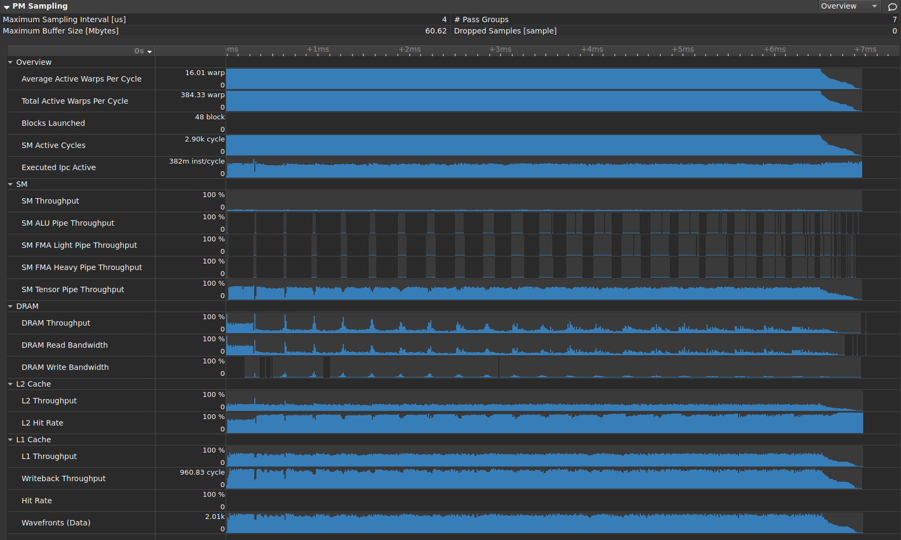
Example PM sampling timeline for an application using tensor cores. The timeline shows a typical tail effect starting at ~6.5ms where there is not sufficient work anymore to fill all SMs. It also allows you to see the relationship between compute (SM Tensor Pipe Throughput) and data loading (DRAM Throughput and L2 Hit Rate). Whenever the L2 cache doesn’t have the needed data anymore readily available, its hit rate decreases, DRAM Throughput increases as the data needs to be loaded from global memory, and the SM Tensor Pipe Throughput decreases as the SMs are waiting for the data to arrive.
Support
Architecture |
Support |
Sampling Intervals |
|---|---|---|
Volta and earlier |
Not supported |
n/a |
TU10x-GA100 |
Supported |
>= 20000 cycles |
GA10x and later |
Supported |
>= 1000 ns 5 |
PM sampling is supported on all platforms except vGPU. See below for further limitations that apply to context switch trace.
You can query the list of metrics available to PM sampling using the --query-metrics-collection pmsampling option.
Note though that while all listed metrics are available to the PM sampler, only those requiring a single pass can be collected.
Context Switch Trace
Since this data collection samples across the entire GPU device, the tool concurrently collects a context switch trace. The trace is stored as a separate, instanced metric. It tracks when the context of interest was active and can be used to filter the sampling metric to only relevant instances and to better align metrics from multiple passes on the timeline. While it’s generally preferable to have this trace collected, it can be disabled using an environment variable.
Note that context switch trace is not supported on Windows Subsystem for Linux (WSL), Multi-Instance GPU (MIG), or on mobile platforms. Context switch trace in containers is supported with CUDA 12.7 drivers or newer.
Counter Domains
PM sampling metrics are composed of one or more raw counter dependencies internally. If metrics in the same pass share such a dependency, it is only collected once. Each counter is associated with a counter domain, which describes how and where in the hardware the counter is collected. There is a limited number of counters in each domain that can be collected concurrently in the same pass, and the number may vary, depending on the selected counters.
Selecting counters from different domains has the possibility that more metric dependencies can be fit into the same pass. Furthermore, some counters can be collected through different domains, and the domain may be chosen by the tool or the user.
When querying the PM sampling metric collection, the required and optional domains for a metric’s counter dependencies are shown.
E.g., for l1tex__throughput gpu_sm_a,[gpu_sm_b,gpu_sm_c], the domain gpu_sm_a is required and one of the optional domains [gpu_sm_b,gpu_sm_c] must be chosen for this metric to be collectable.
Counter domains can only be selected explicitly in section files, using one or more instances of the CtrDomains: "<domain>" field for PM sampling metrics.
Note that most users should be able to rely on the tool’s automatic selection of counter domains, or the pre-configured domains in section files.
Known Issues
You should be aware of the following potential issues when using PM sampling:
Data collected from different passes may not align perfectly. In the below example, each group of warp stall reasons was collected in a separate pass. The total number of warps doesn’t change during the workload execution, i.e., at one timestamp, data from all passes should sum up to the same total number of warps. However, due to small misalignments, the aggregate row shows several peaks that are likely flatter in the real execution.
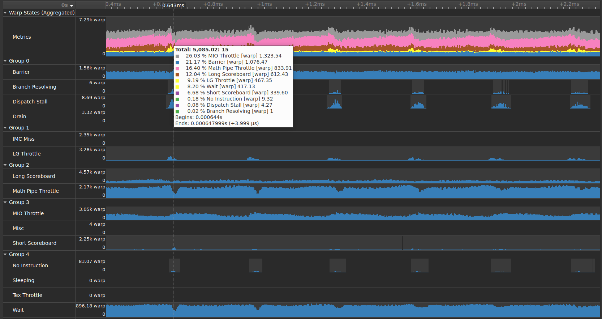
Footnotes
- 5
For some chips or configurations, the minimum sampling interval may be higher.
2.5.2. Warp Sampling
NVIDIA Nsight Compute supports periodic sampling of the warp program counter and warp scheduler state. At a fixed interval of cycles, the sampler in each streaming multiprocessor selects an active warp and outputs the program counter and the warp scheduler state. The tool selects the minimum interval for the device. On small devices, this can be every 32 cycles. On larger chips with more multiprocessors, this may be 2048 cycles. The sampler selects a random active warp. On the same cycle the scheduler may select a different warp to issue.
The resulting metrics are correlated with the individual executed instructions but don’t have any time resolution.
See the Warp Stall Reasons tables in the Metrics Reference for a description of the individual warp scheduler states.
2.6. Reproducibility
In order to provide actionable and deterministic results across application runs, NVIDIA Nsight Compute applies various methods to adjust how metrics are collected. This includes serializing kernel launches, purging GPU caches before each kernel replay or adjusting GPU clocks.
2.6.1. Serialization
NVIDIA Nsight Compute serializes kernel launches within the profiled application, potentially across multiple processes profiled by one or more instances of the tool at the same time.
Serialization across processes is necessary since for the collection of HW performance metrics, some GPU and driver objects can only be acquired by a single process at a time. To achieve this, the lock file TMPDIR/nsight-compute-lock is used. On Windows, TMPDIR is the path returned by the Windows GetTempPath API function. On other platforms, it is the path supplied by the first environment variable in the list TMPDIR, TMP, TEMP, TEMPDIR. If none of these is found, it’s /var/nvidia on QNX and /tmp otherwise.
Serialization within the process is required for most metrics to be mapped to the proper kernel. In addition, without serialization, performance metric values might vary widely if kernel execute concurrently on the same device.
It is currently not possible to disable this tool behavior. Refer to the FAQ entry on possible workarounds.
2.6.2. Clock Control
For many metrics, their value is directly influenced by the current GPU SM and memory clock frequencies. For example, if a kernel instance is profiled that has prior kernel executions in the application, the GPU might already be in a higher clocked state and the measured kernel duration, along with other metrics, will be affected. Likewise, if a kernel instance is the first kernel to be launched in the application, GPU clocks will regularly be lower. In addition, due to kernel replay, the metric value might depend on which replay pass it is collected in, as later passes would result in higher clock states.
To mitigate this non-determinism, NVIDIA Nsight Compute attempts to limit GPU clock frequencies to their base value. As a result, metric values are less impacted by the location of the kernel in the application, or by the number of the specific replay pass.
However, this behavior might be undesirable for analysis of the kernel, e.g. in cases where an external tool is used to fix clock frequencies, or where the behavior of the kernel within the application is analyzed. To solve this, users can adjust the --clock-control option to specify if any clock frequencies should be fixed by the tool.
Factors affecting Clock Control:
Note that thermal throttling directed by the driver cannot be controlled by the tool and always overrides any selected options.
On mobile targets, e.g. L4T or QNX, there may be variations in profiling results due the inability for the tool to lock clocks. Using Nsight Compute’s
--clock-controlto set the GPU clocks will fail or will be silently ignored when profiling on a GPU partition.On L4T, you can use the jetson_clocks script to lock the clocks at their maximums during profiling.
See the Special Configurations section for MIG and vGPU clock control.
2.6.3. Cache Control
As explained in Kernel Replay, the kernel might need to be replayed multiple times to collect all requested metrics. While NVIDIA Nsight Compute can save and restore the contents of GPU device memory accessed by the kernel for each pass, it cannot do the same for the contents of HW caches, such as e.g. the L1 and L2 cache.
This can have the effect that later replay passes might have better or worse performance than e.g. the first pass, as the caches could already be primed with the data last accessed by the kernel. Similarly, the values of HW performance counters collected by the first pass might depend on which kernels, if any, were executed prior to the measured kernel launch.
In order to make HW performance counter value more deterministic, NVIDIA Nsight Compute by default flushes all GPU caches before each replay pass. As a result, in each pass, the kernel will access a clean cache and the behavior will be as if the kernel was executed in complete isolation.
This behavior might be undesirable for performance analysis, especially if the measurement focuses on a kernel within a larger application execution, and if the collected data targets cache-centric metrics. In this case, you can use --cache-control none to disable flushing of any HW cache by the tool.
2.6.4. Persistence Mode
The NVIDIA kernel mode driver must be running and connected to a target GPU device before any user interactions with that device can take place. The driver behavior differs depending on the OS. Generally, on Linux, if the kernel mode driver is not already running or connected to a target GPU, the invocation of any program that attempts to interact with that GPU will transparently cause the driver to load and/or initialize the GPU. When all GPU clients terminate the driver will then deinitialize the GPU.
If persistence mode is not enabled (as part of the OS, or by the user), applications triggering GPU initialization may incur a short startup cost. In addition, on some configurations, there may also be a shutdown cost when the GPU is de-initialized at the end of the application.
It is recommended to enable persistence mode on applicable operating systems before profiling with NVIDIA Nsight Compute for more consistent application behavior.
2.7. Special Configurations
2.7.1. Multi Instance GPU
Multi-Instance GPU (MIG) is a feature that allows a GPU to be partitioned into multiple CUDA devices. The partitioning is carried out on two levels: First, a GPU can be split into one or multiple GPU Instances. Each GPU Instance claims ownership of one or more streaming multiprocessors (SM), a subset of the overall GPU memory, and possibly other GPU resources, such as the video encoders/decoders. Second, each GPU Instance can be further partitioned into one or more Compute Instances. Each Compute Instance has exclusive ownership of its assigned SMs of the GPU Instance. However, all Compute Instances within a GPU Instance share the GPU Instance’s memory and memory bandwidth. Every Compute Instance acts and operates as a CUDA device with a unique device ID. See the driver release notes as well as the documentation for the nvidia-smi CLI tool for more information on how to configure MIG instances.
For profiling, a Compute Instance can be of one of two types: isolated or shared.
An isolated Compute Instance owns all of its assigned resources and does not share any GPU unit with another Compute Instance. In other words, the Compute Instance is the same size as its parent GPU Instance and consequently does not have any other sibling Compute Instances. Profiling works as usual for isolated Compute Instances.
A shared Compute Instance uses GPU resources that can potentially also be accessed by other Compute Instances in the same GPU Instance. Due to this resource sharing, collecting profiling data from those shared units is not permitted. Attempts to collect metrics from a shared unit fail with an error message of ==ERROR== Failed to access the following metrics. When profiling on a MIG instance, it is not possible to collect metrics from GPU units that are shared with other MIG instances followed by the list of failing metrics. Collecting only metrics from GPU units that are exclusively owned by a shared Compute Instance is still possible.
Locking Clocks
NVIDIA Nsight Compute is not able to set the clock frequency on any Compute Instance for profiling. You can continue analyzing kernels without fixed clock frequencies (using --clock-control none; see here for more details). If you have sufficient permissions, nvidia-smi can be used to configure a fixed frequency for the whole GPU by calling nvidia-smi --lock-gpu-clocks=tdp,tdp. This sets the GPU clocks to the base TDP frequency until you reset the clocks by calling nvidia-smi --reset-gpu-clocks.
MIG on Baremetal (non-vGPU)
All Compute Instances on a GPU share the same clock frequencies.
MIG on NVIDIA vGPU
Enabling profiling for a VM gives the VM access to the GPU’s global performance counters, which may include activity from other VMs executing on the same GPU. Enabling profiling for a VM also allows the VM to lock clocks on the GPU, which impacts all other VMs executing on the same GPU, including MIG Compute Instances.
2.7.2. CUDA Green Contexts
CUDA Green Contexts is a feature of the CUDA driver API that allows spacial partitioning of a GPU by assigning a set of resources to a CUDA context on which the context should operate on. NVIDIA Nsight Compute supports profiling applications using CUDA Green Contexts by enabling collection of the same metrics as described in the Metrics Reference. In particular, any combination of Workload Type and Replay Mode within the compatibility matrix is also supported for Green Context applications. For a list of API functions supported in range-based replay modes refer to the Green Contexts section in the supported APIs.
Unlike with regular CUDA contexts, when using Green Contexts, metrics are subdivided into two categories: those that can be attributed to a Green Context directly, and those that cannot. The former comprise of metrics that are collected on hardware units that are directly assigned to the Green Context, such as SMs or the L1 cache, where the latter are composed of metrics that do not give exclusive access to a Green Context, such as the L2 cache. The former will be referred to as Green-Context attributable metrics and the latter as non-attributable metrics.
Since it is generally more insightful to analyze the performance of a Green Context application relative to the resources it was assigned, instead of the entire GPU, attributable metrics are scaled to the number of SMs of the Green Context. 6 This is not the case for non-attributable metrics. Refer to the supported driver versions below for more information on the minimum driver version required for this feature.
To get an overview of how Green Contexts are supported in the UI, including ways to distinguish attributable and non-attributable metrics, refer to the Green Contexts support section. On the CLI, –print-metric-attribution may be used to display the attribution levels, see the Command Line Options.
Supported driver versions
Starting with NVIDIA Nsight Compute 2024.1, profiling of applications using CUDA Green Contexts is fully supported. This requires a minimum driver version of 550. Note, however, that with this version metrics were always scaled with the the number of all SMs available on the GPU.
From NVIDIA Nsight Compute 2024.3 onwards, attributable metrics are scaled to the number of SMs used by the Green Context. This requires a minimum driver version of 560.
Footnotes
- 6
Although not intended as the primary use-case, different Green Contexts can be initialized with overlapping resources. When executing and profiling such Green Contexts concurrently, attributable metrics may contain contributions from multiple Green Contexts, although the same metric scaling behavior as described in this section would still apply.
2.8. Roofline Charts
Roofline charts provide a very helpful way to visualize achieved performance on complex processing units, like GPUs. This section introduces the Roofline charts that are presented within a profile report.
Note
The values of operations/second calculated from this NVIDIA developer tools site and generated by using the data center monitoring tools are not calculated in the same way as the operations/second used for export control purposes and should not be relied upon to assess performance against the export control limits.
2.8.1. Overview
Kernel performance is not only dependent on the operational speed of the GPU. Since a kernel requires data to work on, performance is also dependent on the rate at which the GPU can feed data to the kernel. A typical roofline chart combines the peak performance and memory bandwidth of the GPU, with a metric called Arithmetic Intensity (a ratio between Work and Memory Traffic), into a single chart, to more realistically represent the achieved performance of the profiled kernel. A simple roofline chart might look like the following:
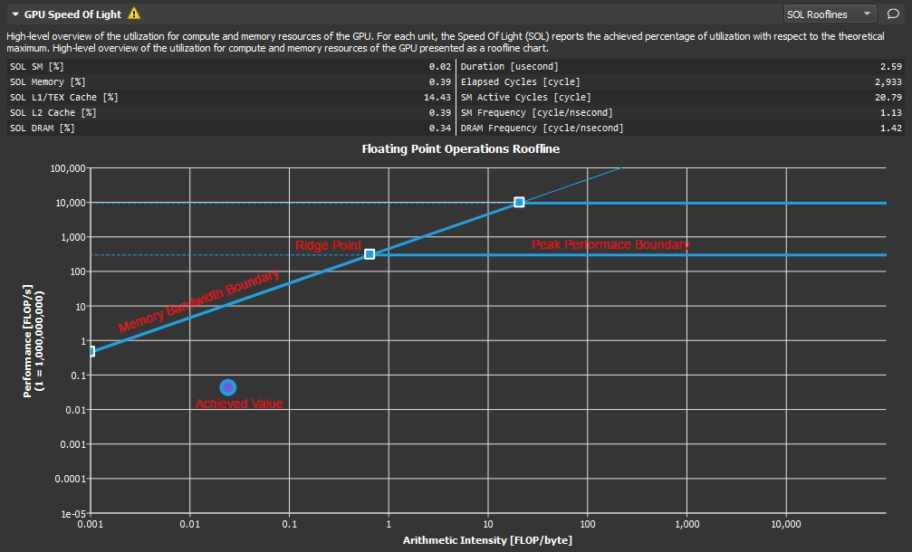
Roofline overview.
This chart actually shows two different rooflines. However, the following components can be identified for each:
Vertical Axis - The vertical axis represents Floating Point Operations per Second (FLOPS). For GPUs this number can get quite large and so the numbers on this axis can be scaled for easier reading (as shown here). In order to better accommodate the range, this axis is rendered using a logarithmic scale.
Horizontal Axis - The horizontal axis represents Arithmetic Intensity, which is the ratio between Work (expressed in floating point operations per second), and Memory Traffic (expressed in bytes per second). The resulting unit is in floating point operations per byte. This axis is also shown using a logarithmic scale.
Memory Bandwidth Boundary - The memory bandwidth boundary is the sloped part of the roofline. By default, this slope is determined entirely by the memory transfer rate of the GPU but can be customized inside the SpeedOfLight_RooflineChart.section file if desired.
Peak Performance Boundary - The peak performance boundary is the flat part of the roofline By default, this value is determined entirely by the peak performance of the GPU but can be customized inside the SpeedOfLight_RooflineChart.section file if desired.
Ridge Point - The ridge point is the point at which the memory bandwidth boundary meets the peak performance boundary. This point is a useful reference when analyzing kernel performance.
Achieved Value - The achieved value represents the performance of the profiled kernel. If baselines are being used, the roofline chart will also contain an achieved value for each baseline. The outline color of the plotted achieved value point can be used to determine from which baseline the point came.
2.8.2. Analysis
The roofline chart can be very helpful in guiding performance optimization efforts for a particular kernel.
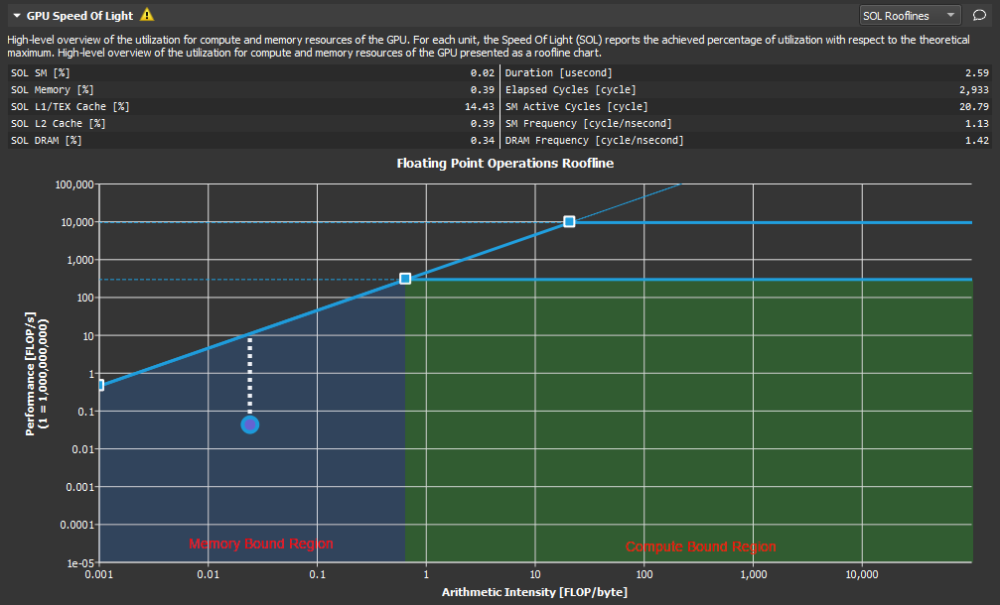
Roofline anaysis.
As shown here, the ridge point partitions the roofline chart into two regions. The area shaded in blue under the sloped Memory Bandwidth Boundary is the Memory Bound region, while the area shaded in green under the Peak Performance Boundary is the Compute Bound region. The region in which the achieved value falls, determines the current limiting factor of kernel performance.
The distance from the achieved value to the respective roofline boundary (shown in this figure as a dotted white line), represents the opportunity for performance improvement. The closer the achieved value is to the roofline boundary, the more optimal is its performance. An achieved value that lies on the Memory Bandwidth Boundary but is not yet at the height of the ridge point would indicate that any further improvements in overall FLOP/s are only possible if the Arithmetic Intensity is increased at the same time.
Using the baseline feature in combination with roofline charts, is a good way to track optimization progress over a number of kernel executions.
2.9. Memory Chart
The Memory Chart shows a graphical, logical representation of performance data for memory subunits on and off the GPU. Performance data includes transfer sizes, hit rates, number of instructions or requests, etc.
2.9.1. Overview
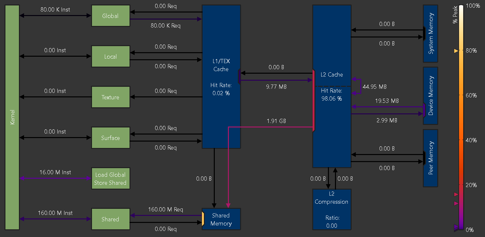
Memory chart for an NVIDIA A100 GPU
Logical Units (green)
Logical units are shown in green (active) or grey (inactive).
Kernel: The CUDA kernel executing on the GPU’s Streaming Multiprocessors
Global: CUDA global memory
Local: CUDA local memory
Texture: CUDA texture memory
Surface: CUDA surface memory
Shared: CUDA shared memory
Load Global Store Shared: Instructions loading directly from global into shared memory without intermediate register file access
Physical Units (blue)
Physical units are shown in blue (active) or grey (inactive).
L1/TEX Cache: The L1/Texture cache. The underlying physical memory is split between this cache and the user-managed Shared Memory.
Shared Memory: CUDA’s user-managed shared memory. The underlying physical memory is split between this and the L1/TEX Cache.
L2 Cache: The L2 cache
L2 Compression: The memory compression unit of the L2 Cache
System Memory: Off-chip system (CPU) memory
Device Memory: On-chip device (GPU) memory of the CUDA device that executes the kernel
Peer Memory: On-chip device (GPU) memory of other CUDA devices
Depending on the exact GPU architecture, the exact set of shown units can vary, as not all GPUs have all units.
Links
Links between Kernel and other logical units represent the number of executed instructions (Inst) targeting the respective unit. For example, the link between Kernel and Global represents the instructions loading from or storing to the global memory space. Instructions using the NVIDIA A100’s Load Global Store Shared paradigm are shown separately, as their register or cache access behavior can be different from regular global loads or shared stores.
Links between logical units and blue, physical units represent the number of requests (Req) issued as a result of their respective instructions. For example, the link going from L1/TEX Cache to Global shows the number of requests generated due to global load instructions.
The color of each link represents the percentage of peak utilization of the corresponding communication path. The color legend to the right of the chart shows the applied color gradient from unused (0%) to operating at peak performance (100%). If a link is inactive, it is shown in grey color. Triangle markers to the left of the legend correspond to the links in the chart. The markers offer a more accurate value estimate for the achieved peak performances than the color gradient alone.
Ports
A unit often shares a common data port for incoming and outgoing traffic. While the links sharing a port might operate well below their individual peak performances, the unit’s data port may have already reached its peak. Port utilization is shown in the chart by colored rectangles inside the units located at the incoming and outgoing links. Ports use the same color gradient as the data links and have also a corresponding marker to the left of the legend. Inactive ports are shown in grey color.
Metrics
Metrics from this chart can be collected on the command line using --set full, --section MemoryWorkloadAnalysis_Chart or --metrics group:memory__chart.
An example of the correlation between the peak values reported in the memory tables and the ports in the memory chart is shown below.
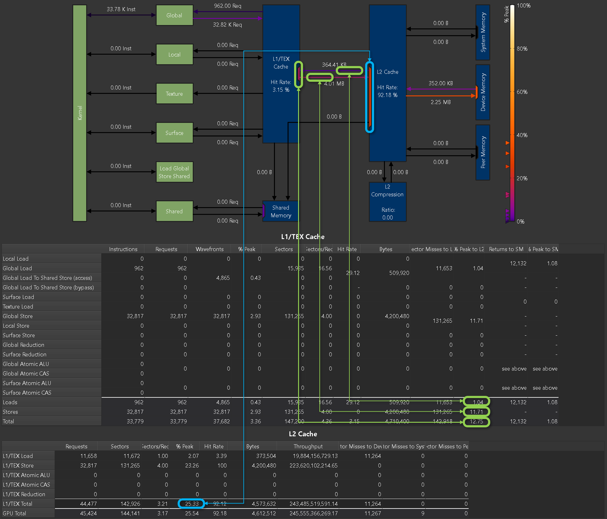
Mapping of peak values between memory tables and memory chart
2.10. Memory Tables
The Memory Tables show detailed metrics for the various memory HW units, such as shared memory, the caches, and device memory. For most table entries, you can hover over it to see the underlying metric name and description. Some entries are generated as derivatives from other cells, and do not show a metric name on their own, but the respective calculation. If a certain metric does not contribute to the generic derivative calculation, it is shown as UNUSED in the tooltip. You can hover over row or column headers to see a description of this part of the table.
2.10.2. L1/TEX Cache
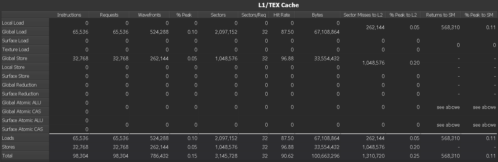
Example L1/TEX Cache memory table, collected on an RTX 2080 Ti
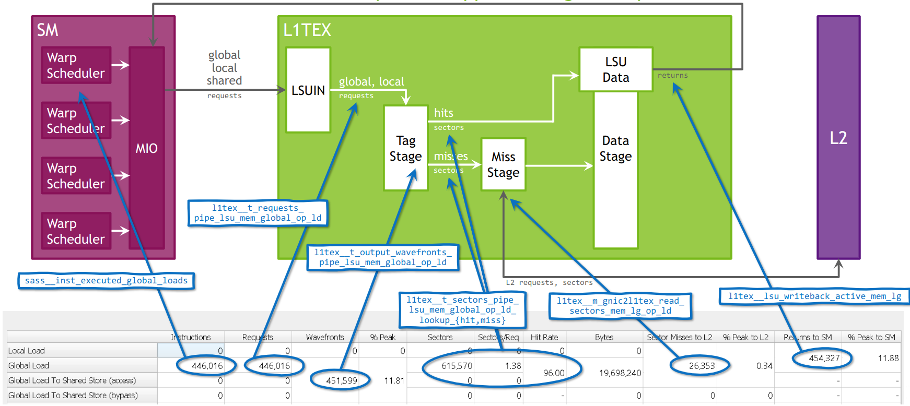
Model of the Global Load Pipeline for the L1TEX cache on GA100, mapped to the memory table.
Columns
|
For each access type, the total number of all actually executed assembly (SASS) instructions per warp. Predicated-off instructions are not included. E.g., the instruction LDG would be counted towards Global Loads. |
|
The total number of all requests to L1, generated for each instruction type. On SM 7.0 (Volta) and newer architectures, each instruction generates exactly one request for LSU traffic (global, local, …). For texture (TEX) traffic, more than one request may be generated. In the example, each of the 65536 global load instructions generates exactly one request. |
|
Number of wavefronts required to service the requested memory operation. Wavefronts are serialized and processed on different cycles. |
|
Percentage of peak utilization for the units processing wavefronts. High numbers can imply that the processing pipelines are saturated and can become a bottleneck. |
|
The total number of all L1 sectors accesses sent to L1. Each load or store request accesses one or more sectors in the L1 cache. Atomics and reductions are passed through to the L2 cache. |
|
The average ratio of sectors to requests for the L1 cache. For the same number of active threads in a warp, smaller numbers imply a more efficient memory access pattern. For warps with 32 active threads, the optimal ratios per access size are: 32-bit: 4, 64-bit: 8, 128-bit: 16. Smaller ratios indicate some degree of uniformity or overlapped loads within a cache line. Higher numbers can imply uncoalesced memory accesses and will result in increased memory traffic. In the example, the average ratio for global loads is 32 sectors per request, which implies that each thread needs to access a different sector. Ideally, for warps with 32 active threads, with each thread accessing a single, aligned 32-bit value, the ratio would be 4, as every 8 consecutive threads access the same sector. |
|
Sector hit rate (percentage of requested sectors that do not miss) in the L1 cache. Sectors that miss need to be requested from L2, thereby contributing to Sector Misses to L2. Higher hit rates imply better performance due to lower access latencies, as the request can be served by L1 instead of a later stage. Not to be confused with Tag Hit Rate (not shown). |
|
Total number of bytes requested from L1. This is identical to the number of sectors multiplied by 32 byte, since the minimum access size in L1 is one sector. |
|
Total number of sectors that miss in L1 and generate subsequent requests in the L2 Cache. In this example, the 262144 sector misses for global and local loads can be computed as the miss-rate of 12.5%, multiplied by the number of 2097152 sectors. |
|
Percentage of peak utilization of the L1-to-XBAR interface, used to send L2 cache requests. If this number is high, the workload is likely dominated by scattered {writes, atomics, reductions}, which can increase the latency and cause warp stalls. |
|
Number of return packets sent from the L1 cache back to the SM. Larger request access sizes result in higher number of returned packets. |
|
Percentage of peak utilization of the XBAR-to-L1 return path (compare Returns to SM). If this number is high, the workload is likely dominated by scattered reads, thereby causing warp stalls. Improving read-coalescing or the L1 hit rate could reduce this utilization. |
Rows
|
The various access types, e.g. loads from global memory or reduction operations on surface memory. |
|
The aggregate of all load access types in the same column. |
|
The aggregate of all store access types in the same column. |
|
The aggregate of all load and store access types in the same column. |
Metrics
Metrics from this table can be collected on the command line using --set full, --section MemoryWorkloadAnalysis_Tables or --metrics group:memory__first_level_cache_table.
2.10.3. L2 Cache
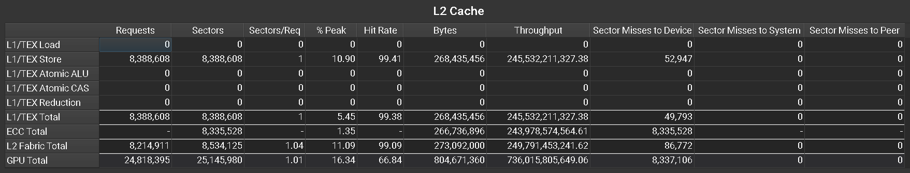
Example L2 Cache memory table, collected on an RTX 2080 Ti
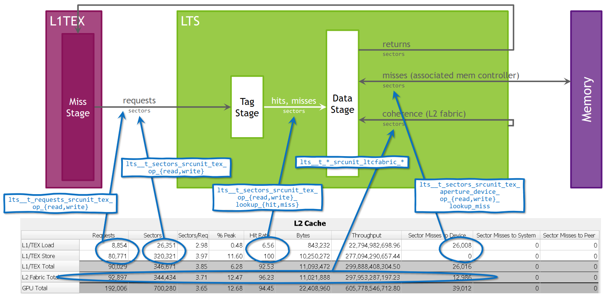
Model of the L2 cache on GA100, mapped to the memory table.
Columns
|
For each access type, the total number of requests made to the L2 cache. This correlates with the Sector Misses to L2 for the L1 cache. Each request accesses up to four sectors from a single 128 byte cache line. |
|
For each access type, the total number of sectors requested from the L2 cache. Each request accesses between one and four sectors. |
|
The average ratio of sectors to requests for the L2 cache. For the same number of active threads in a warp, smaller numbers imply a more efficient memory access pattern. Smaller ratios indicate some degree of uniformity or overlapped loads within a cache line. Higher numbers can imply uncoalesced memory accesses and will result in increased memory traffic. |
|
Percentage of peak sustained number of sectors. The “work package” in the L2 cache is a sector. Higher values imply a higher utilization of the unit and can show potential bottlenecks, as it does not necessarily indicate efficient usage. |
|
Hit rate (percentage of requested sectors that do not miss) in the L2 cache. Sectors that miss need to be requested from a later stage, thereby contributing to one of Sector Misses to Device, Sector Misses to System, or Sector Misses to Peer. Higher hit rates imply better performance due to lower access latencies, as the request can be served by L2 instead of a later stage. |
|
Total number of bytes requested from L2. This is identical to the number of sectors multiplied by 32 byte, since the minimum access size in L2 is one sector. |
|
Achieved L2 cache throughput in bytes per second. High values indicate high utilization of the unit. |
|
Total number of sectors that miss in L2 and generate subsequent requests in device memory. |
|
Total number of sectors that miss in L2 and generate subsequent requests in system memory. |
|
Total number of sectors that miss in L2 and generate subsequent requests in peer memory. |
Rows
|
The various access types, e.g. loads or reductions originating from L1 cache. |
|
Total for all operations originating from the L1 cache. |
|
Total for all operations caused by ECC (Error Correction Code). If ECC is enabled, L2 write requests that partially modify a sector cause a corresponding sector load from DRAM. These additional load operations increase the sector misses of L2. |
|
Total for all operations across the L2 fabric connecting the two L2 partitions. This row is only shown for kernel launches on CUDA devices with L2 fabric. |
|
Total for all operations across all clients of the L2 cache. Independent of having them split out separately in this table. |
Metrics
Metrics from this table can be collected on the command line using --set full, --section MemoryWorkloadAnalysis_Tables or --metrics group:memory__l2_cache_table.
2.10.4. L2 Cache Eviction Policies
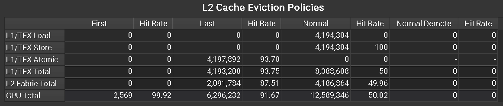
Example L2 Cache Eviction Policies memory table, collected on an A100 GPU
Columns
|
Number of sectors accessed in the L2 cache using the |
|
Cache hit rate for sector accesses in the L2 cache using the |
|
Number of sectors accessed in the L2 cache using the |
|
Cache hit rate for sector accesses in the L2 cache using the |
|
Number of sectors accessed in the L2 cache using the |
|
Cache hit rate for sector accesses in the L2 cache using the |
|
Number of sectors accessed in the L2 cache using the |
|
Cache hit rate for sector accesses in the L2 cache using the |
Rows
|
The various access types, e.g. loads or reductions, originating from L1 cache. |
|
Total for all operations originating from the L1 cache. |
|
Total for all operations across the L2 fabric connecting the two L2 partitions. This row is only shown for kernel launches on CUDA devices with L2 fabric. |
|
Total for all operations across all clients of the L2 cache. Independent of having them split out separately in this table. |
Metrics
Metrics from this table can be collected on the command line using --set full, --section MemoryWorkloadAnalysis_Tables or --metrics group:memory__l2_cache_evict_policy_table. Note that this table is only available on GPUs with GA100 or newer.
2.10.5. Device Memory
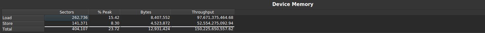
Example Device Memory table, collected on an RTX 2080 Ti
Columns
|
For each access type, the total number of sectors requested from device memory. |
|
Percentage of peak device memory utilization. Higher values imply a higher utilization of the unit and can show potential bottlenecks, as it does not necessarily indicate efficient usage. |
|
Total number of bytes transferred between L2 Cache and device memory. |
|
Achieved device memory throughput in bytes per second. High values indicate high utilization of the unit. |
Rows
|
Device memory loads and stores. |
|
The aggregate for all access types in the same column. |
Metrics
Metrics from this table can be collected on the command line using --set full, --section MemoryWorkloadAnalysis_Tables or --metrics group:memory__dram_table.
2.11. FAQ
n/a metric values
n/a means that the metric value is “not available”. The most common reason is that the requested metric does not exist. This can either be the result of a typo, or a missing suffix. Verify the metric name against the output of of the
--query-metricsNVIDIA Nsight Compute CLI option.If the metric name was copied (e.g. from an old version of this documentation), make sure that it does not contain zero-width unicode characters.
Finally, the metric might simply not exist for the targeted GPU architecture. For example, the IMMA pipeline metric
sm__inst_executed_pipe_tensor_op_imma.avg.pct_of_peak_sustained_activeis not available on GV100 chips.Metric values outside the expected logical range
This includes e.g. percentages exceeding 100% or metrics reporting negative values. For further details, see Range and Precision.
ERR_NVGPUCTRPERM - The user does not have permission to access NVIDIA GPU Performance Counters on the target device.
By default, NVIDIA drivers require elevated permissions to access GPU performance counters. On mobile platforms, profile as root/using sudo. On other platforms, you can either start profiling as root/using sudo, or by enabling non-admin profiling. For further details, see https://developer.nvidia.com/ERR_NVGPUCTRPERM.
On Windows Subsystem for Linux (WSL), access to NVIDIA GPU Performance Counters must be enabled in the NVIDIA Control Panel of the Windows host.
Unsupported GPU
This indicates that the GPU, on which the current kernel is launched, is not supported. See the Release Notes for a list of devices supported by your version of NVIDIA Nsight Compute. It can also indicate that the current GPU configuration is not supported. For example, NVIDIA Nsight Compute might not be able to profile GPUs in SLI configuration.
Connection error detected communicating with target application.
The inter-process connection to the profiled application unexpectedly dropped. This happens if the application is killed or signals an exception (e.g. segmentation fault).
Failed to connect. The target process may have exited.
This occurs if
the application does not call any CUDA API calls before it exits.
the application terminates early because it was started from the wrong working directory, or with the wrong arguments. In this case, check the details in the Start Activity Dialog.
the application crashes before calling any CUDA API calls.
the application launches child processes which use the CUDA. In this case, launch with the
--target-processes alloption.
The profiler returned an error code: (number)
For the non-interactive Profile activity, the NVIDIA Nsight Compute CLI is started to generate the report. If either the application exited with a non-zero return code, or the NVIDIA Nsight Compute CLI encountered an error itself, the resulting return code will be shown in this message.
For example, if the application hit a segmentation fault (SIGSEGV) on Linux, it will likely return error code 11. All non-zero return codes are considered errors, so the message is also shown if the application exits with return code 1 during regular execution.
To debug this issue, it can help to run the data collection directly from the command line using
ncuin order to observe the application’s and the profiler’s command line output, e.g.==ERROR== The application returned an error code (11)Failed to open/create lock file (path). Please check that this process has write permissions on this file.
NVIDIA Nsight Compute failed to create or open the file
(path)with write permissions. This file is used for inter-process serialization. NVIDIA Nsight Compute does not remove this file after profiling by design. The error occurs if the file was created by a profiling process with permissions that prevent the current process from writing to this file, or if the current user can’t acquire this file for other reasons (e.g. certain Linux kernel security settings).The file is in the current temporary directory, i.e.
TMPDIR/nsight-compute-lock. On Windows, TMPDIR is the path returned by the WindowsGetTempPathAPI function. On other platforms, it is the path supplied by the first environment variable in the listTMPDIR, TMP, TEMP, TEMPDIR. If none of these is found, it’s/var/nvidiaon QNX and/tmpotherwise.Older versions of NVIDIA Nsight Compute did not set write permissions for all users on this file by default. As a result, running the tool on the same system with a different user might cause this error. This has been resolved since version 2020.2.1.
The following workarounds can be used to solve this problem:
If it is otherwise ensured that no concurrent NVIDIA Nsight Compute instances are active on the same system, set
TMPDIRto a different directory for which the current user has write permissions.Ask the user owning the file, or a system administrator, to remove it or add write permissions for all potential users.
On Linux systems setting
fs.protected_regular=1, root or other users may not be able to access this file, even though the owner can, if the sticky bit is set on the temporary directory. Either disable this setting usingsudo sysctl fs.protected_regular=0, use a different temporary directory (see above), or enable access to hardware performance counters for non-root users and profile as the same user who owns the file (see https://developer.nvidia.com/ERR_NVGPUCTRPERM on how to change this setting).
Profiling failed because a driver resource was unavailable.
The error indicates that a required CUDA driver resource was unavailable during profiling. Most commonly, this means that NVIDIA Nsight Compute could not reserve the driver’s performance monitor, which is necessary for collecting most metrics.
This can happen if another application has a concurrent reservation on this resource. Such applications can be e.g. DCGM, a client of CUPTI’s Profiling API, Nsight Graphics, or another instance of NVIDIA Nsight Compute without access to the same file system (see serialization for how this is prevented within the same file system).
If you expect the problem to be caused by DCGM, consider using
dcgmi profile --pauseto stop its monitoring while profiling with NVIDIA Nsight Compute.Could not deploy stock * files to *
Could not determine user home directory for section deployment.
An error occurred while trying to deploy stock section or rule files. By default, NVIDIA Nsight Compute tries to deploy these to a versioned directory in the user’s home directory (as identified by the
HOMEenvironment variable on Linux), e.g./home/user/Documents/NVIDIA Nsight Compute/<version>/Sections.If the directory cannot be determined (e.g. because this environment variable is not pointing to a valid directory), or if there is an error while deploying the files (e.g. because the current process does not have write permissions on it), warning messages are shown and NVIDIA Nsight Compute falls back to using stock sections and rules from the installation directory.
If you are in an environment where you consistently don’t have write access to the user’s home directory, consider populating this directory upfront using
ncu --section-folder-restore, or by making/home/user/Documents/NVIDIA Nsight Compute/<version>a symlink to a writable directory.ProxyJump SSH option is not working
NVIDIA Nsight Compute does not manage authentication or interactive prompts with the OpenSSH client launched when using the
ProxyJumpoption. Therefore, to connect through an intermediate host for the first time, you will not be able to accept the intermediate host’s key. A simple way to pinpoint the cause of failures in this case is to open a terminal and use the OpenSSH client to connect to the remote target. Once that connection succeeds, NVIDIA Nsight Compute should be able to connect to the target, too.SSH connection fails without trying to connect
If the connection fails without trying to connect, there may be a problem with the settings you entered into the Start Activity Dialog. Please make sure that the
IP/Host Name,User NameandPortfields are correctly set.SSH connections are still not working
The problem might come from NVIDIA Nsight Compute’s SSH client not finding a suitable host key algorithm to use which is supported by the remote server. You can force NVIDIA Nsight Compute to use a specific set of host key algorithms by setting the
HostKeyAlgorithmsoption for the problematic host in your SSH configuration file. To list the supported host key algorithms for a remote target, you can use thessh-keyscanutility which comes with the OpenSSH client.Removing host keys from known hosts files
When connecting to a target machine, NVIDIA Nsight Compute tries to verify the target’s host key against the same local database as the OpenSSH client. If NVIDIA Nsight Compute find the host key is incorrect, it will inform you through a failure dialog. If you trust the key hash shown in the dialog, you can remove the previously saved key for that host by manually editing your known hosts database or using the
ssh-keygen -R <host>command.Qt initialization failed
Failed to load Qt platform plugin
See System Requirements for Linux.
ImportError: /lib64/libstdc++.so.6: version `GLIBCXX_3.4.xx' not foundwhen importingncu_reportIn case the system’s
libstdc++is too old forncu_reportyou can use the version shipped with NVIDIA Nsight Compute. To do so, add the respective directory to LD_LIBRARY_PATH, e.g.,export LD_LIBRARY_PATH=<ncu_install_dir>/host/<arch>/:$LD_LIBRARY_PATH.
Notices
Notices
ALL NVIDIA DESIGN SPECIFICATIONS, REFERENCE BOARDS, FILES, DRAWINGS, DIAGNOSTICS, LISTS, AND OTHER DOCUMENTS (TOGETHER AND SEPARATELY, “MATERIALS”) ARE BEING PROVIDED “AS IS.” NVIDIA MAKES NO WARRANTIES, EXPRESSED, IMPLIED, STATUTORY, OR OTHERWISE WITH RESPECT TO THE MATERIALS, AND EXPRESSLY DISCLAIMS ALL IMPLIED WARRANTIES OF NONINFRINGEMENT, MERCHANTABILITY, AND FITNESS FOR A PARTICULAR PURPOSE.
Information furnished is believed to be accurate and reliable. However, NVIDIA Corporation assumes no responsibility for the consequences of use of such information or for any infringement of patents or other rights of third parties that may result from its use. No license is granted by implication of otherwise under any patent rights of NVIDIA Corporation. Specifications mentioned in this publication are subject to change without notice. This publication supersedes and replaces all other information previously supplied. NVIDIA Corporation products are not authorized as critical components in life support devices or systems without express written approval of NVIDIA Corporation.
Trademarks
NVIDIA and the NVIDIA logo are trademarks or registered trademarks of NVIDIA Corporation in the U.S. and other countries. Other company and product names may be trademarks of the respective companies with which they are associated.